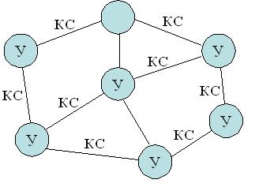
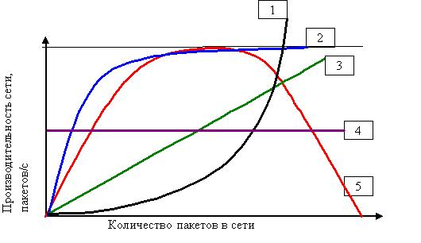
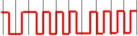
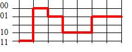
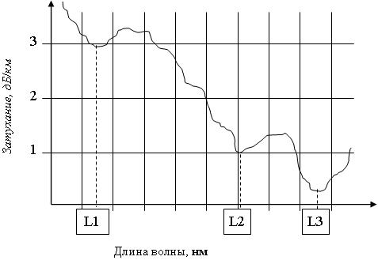
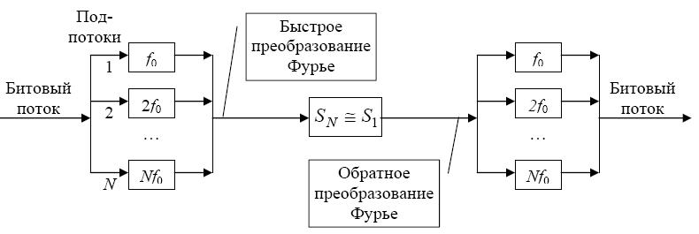

ВАЖНО: Правильные ответы -- это те, которые выделены жирными И ВСЕ ПОСЛЕ них.
Например, если предпоследний ответ выделен жирным, то правильные ответы -- это
предпоследний и последний.
(2) Что по определению может включать в себя ЭВМ (компьютер)?
- узел/узлы связи
- канал связи
- два и более центральных процессоров
- прикладные программы
- операционная система
- базы данных
- процессоры ввода/вывода
- оперативная память
- устройства ввода/вывода
- ровно один центральный процессор
(процессоры ввода/вывода
)
(2) Что по определению может включать в себя вычислительный комплекс?
- узел/узлы связи
- канал связи
- базы данных
- прикладные программы
- операционная система
- ровно один центральный процессор
- процессоры ввода/вывода
- оперативная память
- устройства ввода/вывода
- два и более центральных процессоров
(процессоры ввода/вывода
)
(2) Что по определению может включать в себя вычислительная система?
- узел/узлы связи
- канал связи
- два и более центральных процессоров
- прикладные программы
- операционная система
- базы данных
- процессоры ввода/вывода
- оперативная память
- устройства ввода/вывода
- ровно один центральный процессор
(два и более центральных процессоров
)
(2) Что по определению могут включать в себя средства телекоммуникаций?
- устройства ввода/вывода
- ровно один центральный процессор
- два и более центральных процессоров
- прикладные программы
- операционная система
- базы данных
- процессоры ввода/вывода
- оперативная память
- канал связи
- узел/узлы связи
(канал связи
)
(2) Что по определению может включать в себя ЭВМ (компьютер)?
- обслуживающий персонал
- операционная система
- программные средства
- все прочие варианты ответов неправильные
- информационное обеспечение
- драйверы устройств
- технические средства
(технические средства
)
(2) Что по определению может включать в себя вычислительная система ?
- обслуживающий персонал
- все прочие варианты ответов неправильные
- информационное обеспечение
- программные средства
- технические средства
(информационное обеспечение
)
(2) В чем отличие информации от данных? Укажите верные утверждения.
- Данные и информация - это одно и то же.
- Количественной мерой данных является энтропия
- Данные всегда содержат информацию
- Объем информации измеряется в битах
- Мерой неопределенности информации является энтропия
- Объем данных измеряется в битах
- Данные могут не содержать информацию
(Мерой неопределенности информации является энтропия
)
(1) Как называется совокупность средств вычислительной техники, объединенных с помощью средств
телекоммуникаций? Укажите все синонимичные термины.
- вычислительный комплекс
- вычислительная система
- многомашинный вычислительный комплекс
- ЭВМ (компьютер)
- многопроцессорный вычислительный комплекс
- компьютерная сеть
- сеть ЭВМ
(компьютерная сеть
)
(1) Основной целью построения вычислительного комплекса является обеспечение ... (закончите фразу)
- управления внешним объектом
- низкой стоимости
- высокой скорости передачи данных
- высокой производительности при невысокой стоимости
- высокой надежности при невысокой производительности
- высокой надежности и/или производительности
(высокой надежности и/или производительности
)
(1) В чём принято измерять системную производительность вычислительной системы?
- кадры в секунду (FPS)
- мегагерцы (MHz)
- такты в секунду
- миллионы инструкций в секунду (MIPS)
- операции с плавающей точкой в секунду (FLOPS)
- бод (baud)
- задач в секунду
(задач в секунду
)
(2) В чём принято измерять производительность ЭВМ?
- кадры в секуну (FPS)
- герцы (Hz)
- такты в секунду
- децибелы (dB)
- задач в секунду
- миллионы инструкций в секунду (MIPS)
- операции с плавающей точкой в секунду (FLOPS)
(миллионы инструкций в секунду (MIPS)
)
(2) Что по определению включает в себя канал связи?
- шлюз
- оперативная память
- мост
- маршрутизатор
- центр обработки данных
- каналообразующее оборудование
- линия связи
(каналообразующее оборудование
)
(2) Укажите, что из перечисленного называется узлом связи компьютерной сети.
- центр обработки данных
- файловый сервер
- оперативная память
- прокси-сервер
- витая пара
- маршрутизатор
- шлюз
- мост
(маршрутизатор
)
(2) Что принято называть программными средствами вычислительной системы?
- программист
- экспертная система
- обслуживающий персонал
- база знаний
- база данных
- прикладное программное обеспечение
- системное программное обеспечение
(прикладное программное обеспечение
)
(2) Что принято называть информационным обеспечением (dataware) вычислительной системы?
- экспертная система
- каналообразующее оборудование
- обслуживающий персонал
- прикладное программное обеспечение
- системное программное обеспечение
- система управления базой данных
- база данных
(система управления базой данных
)
(2) Укажите основные функции узла связи в компьютерной сети?
- перколяция
- обработка запросов к базе данных
- демаршрутизация
- декоммутация
- демультиплексирование
- мультиплексирование
- коммутация
- маршрутизация
(демультиплексирование
)
(2) Как называется процесс установления физического или логического соединения между входным и выходным
портами узла связи?
* В качестве ответа введите одно слово в именительном падеже в единственном
числе.
коммутация
, Коммутация
, КОММУТАЦИЯ
, switching
, Switching
, SWITCHING
(2) Как называется процесс выбора выходного порта в узле компьютерной сети при определении маршрута передачи
пакета данных?
* В качестве ответа введите одно слово в именительном падеже в единственном
числе.
маршрутизация
, Маршрутизация
, МАРШРУТИЗАЦИЯ
, Routing
, routing
, ROUTING
(2) Как называется процесс объединения нескольких входящих в узел потоков данных в один выходящий из узла поток?
* В качестве ответа введите одно слово в именительном падеже в единственном
числе.
мультиплексирование
, Мультиплексирование
, МУЛЬТИПЛЕКСИРОВАНИЕ
, multiplexing
, Multiplexing
, MULTIPLEXING
(2) Как называется процесс разделения одного входящего в узел потока данных на несколько выходящих из узла
потоков?
* В качестве ответа введите одно слово в именительном падеже в единственном
числе.
демультиплексирование
, Демультиплексирование
, ДЕМУЛЬТИПЛЕКСИРОВАНИЕ
, demultiplexing
, Demultiplexing
, DEMULTIPLEXING
(2) Какие поля в общем случае содержатся в сообщении, передаваемом по компьютерной сети?
- закрытый ключ защиты
- бит-стаффинг
- MAC
- OSI
- концевик
- заголовок
- данные
(концевик
)
(2) Укажите, что является узлом компьютерной сети.
- коадъютор
- линия связи
- витая пара
- среда передачи
- коммутатор
- каналообразующее оборудование
- маршрутизатор
(коммутатор
)
(1) Что обозначает аббревиатура PAN?
- Муниципальная вычислительная сеть
- Офисная вычислительная сеть
- Домашняя вычислительная сеть
- Виртуальная вычислительная сеть
- Глобальная вычислительная сеть
- Локальная вычислительная сеть
- Персональная сеть
(Персональная сеть
)
(1) Установите соответствие русских терминов англоязычным аббревиатурам.
LAN → локальная сеть
MAN → городская сеть
PAN → персональная сеть
WAN → глобальная сеть
(2) Укажите, каких типов бывают компьютерные сети в зависимости от их назначения.
- виртуальные
- иерархические
- беспроводные
- оптоволоконные
- городские
- информационно-управляющие
- информационно-вычислительные
- информационные
- вычислительные
(информационно-управляющие
)
(1) Как называется компьютерная сеть, которая используется для объединения телефонов, карманных ПК,
смартфонов?
- Виртуальная частная сеть
- Корпоративная сеть
- Серверная ферма
- WAN
- MAN
- LAN
- PAN
(PAN
)
(2) Какие технологии используются для построения PAN?
- MPLS
- ATM
- IEEE 802.16 (WiMAX)
- Token Ring
- Ethernet
- Zigbee
- Bluetooth
(Zigbee
)
(1) Что обозначает аббревиатура MAN?
- Персональная сеть
- Офисная вычислительная сеть
- Домашняя вычислительная сеть
- Виртуальная вычислительная сеть
- Глобальная вычислительная сеть
- Локальная вычислительная сеть
- Городская вычислительная сеть
(Городская вычислительная сеть
)
(1) Что обозначает аббревиатура LAN?
- Муниципальная вычислительная сеть
- Офисная вычислительная сеть
- Домашняя вычислительная сеть
- Виртуальная вычислительная сеть
- Глобальная вычислительная сеть
- Персональная сеть
- Локальная вычислительная сеть
(Локальная вычислительная сеть
)
(1) Что обозначает аббревиатура WAN?
- Муниципальная вычислительная сеть
- Офисная вычислительная сеть
- Домашняя вычислительная сеть
- Виртуальная вычислительная сеть
- Персональная сеть
- Локальная вычислительная сеть
- Глобальная вычислительная сеть
(Глобальная вычислительная сеть
)
(2) Как называется компьютерная сеть, представляющая собой логичесое объединение узлов, которые физически
могут находиться в разных локальных сетях?
- LAN
- PAN
- Корпоративная сеть
- Серверная ферма
- WAN
- MAN
- VPN
- Виртуальная частная сеть
(VPN
)
(2) Какие технологии используются для построения LAN?
- MPLS
- ATM
- IEEE 802.16 (WiMAX)
- Zigbee
- Bluetooth
- Token Ring
- Ethernet
(Token Ring
)
(1) Какие технологии используются для построения MAN?
- MPLS
- ATM
- Bluetooth
- Token Ring
- Ethernet
- Zigbee
- IEEE 802.16 (WiMAX)
(IEEE 802.16 (WiMAX)
)
(2) Какие технологии используются для построения WAN?
- Zigbee
- Bluetooth
- IEEE 802.16 (WiMAX)
- Token Ring
- Ethernet
- MPLS
- ATM
(MPLS
)
(2) Какие данные являются в исходном виде дискретными?
- факсимильные
- видео
- аудио
- телефонные
- компьютерные
- телеграфные
(компьютерные
)
(2) Какие данные являются в исходном виде непрерывными?
- цифровые данные
- компьютерные данные
- уровень воды в Неве
- температура воздуха в помещении
- видео
- разговорная речь
(уровень воды в Неве
)
(1) Какой спектр частот имеют аудиоданные (с музыкой)?
- от 40 Гц до 6000 кГц
- от 80 Гц до 12000 Гц
- от 300 Гц до 3400 Гц
- от 300 Гц до 20000 кГц
- от 0 Гц до 20000 Гц
- от 100 Гц до 3400 Гц
- от 0 Гц до 100 кГц
- от 10 кГц до 20 кГц
- от 20 Гц до 20 кГц
(от 20 Гц до 20 кГц
)
(1) В чём отличие аудиоданных от телефонных?
- термин "телефонные данные" некорректен
- у аудиоданных меньшая полоса пропускания
- у аудиоданных большая полоса пропускания
- у аудиоданных меньшая скорость передачи
- у аудиоданных большая скорость передачи
- отличия нет
- у аудиоданных более узкий спектр
- у аудиоданных более широкий спектр
(у аудиоданных более широкий спектр
)
(1) Какой спектр частот имеют голосовые данные?
- от 40 Гц до 6000 кГц
- от 20 Гц до 20 кГц
- от 300 Гц до 3400 Гц
- от 300 Гц до 20000 кГц
- от 0 Гц до 20000 Гц
- от 100 Гц до 3400 Гц
- от 0 Гц до 100 кГц
- от 10 кГц до 20 кГц
- от 80 Гц до 12 кГц
(от 80 Гц до 12 кГц
)
(1) Какой спектр частот имеют видеоданные?
- от 20 Гц до 20 кГц
- от 80 Гц до 12000 Гц
- от 300 Гц до 3400 Гц
- от 300 Гц до 20000 кГц
- от 0 Гц до 20000 Гц
- от 100 Гц до 3400 Гц
- от 0 Гц до 100 кГц
- от 10 кГц до 20 кГц
- от 40 Гц до 6000 кГц
(от 40 Гц до 6000 кГц
)
(1) В какой полосе частот передаются данные в каналах тональной частоты?
- от 40 Гц до 6000 кГц
- от 80 Гц до 12000 Гц
- от 20 Гц до 20 кГц
- от 300 Гц до 20000 кГц
- от 0 Гц до 20000 Гц
- от 100 Гц до 3400 Гц
- от 0 Гц до 100 кГц
- от 10 кГц до 20 кГц
- от 300 Гц до 3400 Гц
(от 300 Гц до 3400 Гц
)
(2) Какие требования предъявляются к организации компьютерных сетей?
- Простота
- Адекватность
- Протяжённость
- Системность
- Размерность
- Эффективность
- Масштабируемость
- Совместимость
- Гибкость
- Открытость
(Эффективность
)
(1) Возможность включения дополнительных компонентов в компьютерную сеть без изменения существующих
технических и программных средств называется ...
- верифицируемостью
- системностью
- надёжностью
- эффективностью
- прозрачностью
- масштабируемостью
- открытостью
(открытостью
)
(1) Сохранение работоспособности при изменении структуры вычислительной сети в результате выхода из строя
отдельных компонентов или при замене оборудования называется ...
оскуляцией
- масштабируемостью
- прозрачностью
- адекватностью
- эффективностью
- открытостью
- гибкостью
(гибкостью
)
(1) Возможность работы в сети оборудования разного типа и разных производителей называется ...
- оскуляцией
- системностью
- прозрачностью
- масштабируемостью
- эффективностью
- совместимостью
(совместимостью
)
(1) Способность компьютерной сети увеличивать свою производительность при добавлении узлов и каналов связи
называется...
эскалацией
- экскалацией
- адекватностью
- надёжностью
- гибкостью
- эффективностью
- открытостью
- масштабируемостью
(масштабируемостью
)
(1) Обеспечение требуемого качества обслуживания пользователей компьютерной сети при минимальных
затратах называется ...
- масштабируемостью
- гибкостью
- надёжностью
- закрытостью
- открытостью
- эффективностью
(эффективностью
)
(2) Укажите номера уровней OSI-модели.
Сетевой уровень → 3
Уровень представления → 6
Физический уровень → 1
Транспортный уровень → 4
Прикладной уровень → 7
Сеансовый уровень → 5
Канальный уровень → 2
(2) Как называются уровни OSI-модели?
5 → сеансовый
7 → прикладной
1 → физический
4 → транспортный
2 → канальный
6 → представления
3 → сетевой
(1) Установите соответствие между русскоязычными и англоязычными названиями уровней OSI-модели
физический уровень → physical layer (PHY)
канальный уровень → data link layer
сетевой уровень → network layer
транспортный уровень → transport layer
сеансовый уровень → session layer
уровень представления → presentation layer
прикладной уровень → application layer
(2) Как называется первый уровень OSI-модели?
* В качестве ответа введите одно слово (прилагательное в именительном падеже)
физический
, Физический
, physical
, PHY
(2) Как называется второй уровень OSI-модели?
* В качестве ответа введите одно слово (прилагательное в именительном падеже)
канальный
, Канальный
, data link
, link
(2) Как называется третий уровень OSI-модели?
* В качестве ответа введите одно слово (прилагательное в именительном падеже)
сетевой
, Сетевой
, network
, Network
(2) Как называется четвёртый уровень OSI-модели?
* В качестве ответа введите одно слово (прилагательное в именительном падеже)
транспортный
, Транспортный
, transport
, Transport
(2) Как называется пятый уровень OSI-модели?
* В качестве ответа введите одно слово (прилагательное в именительном падеже)
сеансовый
, Сеансовый
, сессионный
, Сессионный
, session
, Session
(2) Как называется шестой уровень OSI-модели?
* В качестве ответа введите одно слово (прилагательное в именительном падеже)
представления
, Представления
, представительский
, Представительский
, Presentation
, presentation
(2) Как называется седьмой уровень OSI-модели?
* В качестве ответа введите одно слово (прилагательное в именительном падеже)
прикладной
, Прикладной
, Application
, application
(1) Какая задача решается на 3-м уровне OSI-модели?
- Модуляция сигнала
- Сжатие данных
- Управление каналом
- Модуляция
- Кодирование данных
- Шифрование данных
- Маршрутизация
(Маршрутизация
)
(1) Какая основная задача решается на 2-м уровне OSI-модели?
- управление сетью
- передача сигналов
- кодирование
- мультиплексирование
- конвергенция
- маршрутизация
- управление доступом к среде передачи данных
(управление доступом к среде передачи данных
)
(1) На каком уровне OSI-модели решается задача управления доступом к среде передачи данных?
- представления
- прикладной
- сеансовый
- транспортный
- сетевой
- физический
- канальный
(канальный
)
(1) Сколько уровней содержит OSI-модель?
(1) На каком уровне OSI-модели реализуются методы доступа к среде передачи?
(1) На каком уровне OSI-модели реализуются методы маршрутизации?
(2) На каком уровне OSI-модели реализуется ...?
контроль последовательности прохождения пакетов → транспортный
управление маршрутизацией → сетевой
управление доступом сетевых устройств к среде передачи → канальный
модуляция сигнала, передаваемого по среде → физический
интерфейс между программой пользователя и системой связи → прикладной
кодирование передаваемых сигналов → физический
шифрование и дешифрование данных → представления
(2) На какие подуровни разбивается в IEEE-модели канальный уровень?
- LSR
- STP
- UTP
- LER
- ATM
- LLC
- MAC
(LLC
)
(1) Подуровень управления доступом к среде передачи - это ...
- LSR
- ATM
- STP
- LER
- UTP
- LLC
- MAC
(MAC
)
(1) Подуровень управления логическим соединением - это ...
- UTP
- STP
- LER
- LSR
- ATM
- MAC
- LLC
(LLC
)
(2) Какие типы сервисов обеспечивает LLC-подуровень?
- сервис с установлением соединения и с подтверждением по запросу
- сервис с установлением соединения и с подтверждением доставки
- сервис с маршрутизацией
- сервис без установления соединения и с частичным подтверждением доставки
- сервис с коммутацией
- сервис с установлением соединения
- сервис без установления соединения с подтверждением доставки
- сервис без установления соединения без подтверждения доставки
(сервис с установлением соединения
)
(2) Как называется соглашение о взаимодействии между уровнями одной системы, определяющее структуру
данных и способ обмена данными между соседними уровнями?
* В качестве ответа введите одно слово в именительном падеже в единственном числе.
интерфейс
, Интерфейс
, ИНТЕРФЕЙС
, INTERFACE
, interface
, Interface
(2) Как называется совокупность правил, регламентирующих формат и процедуры взаимодействия процессов
одноимённых уровней на основе обмена сообщениями?
* В качестве ответа введите одно слово в именительном падеже в единственном числе.
протокол
, Протокол
, protocol
, Protocol
, PROTOCOL
, ПРОТОКОЛ
(1) На каком уровне OSI-модели реализуются методы маршрутизации?
- Прикладной
- Представления
- Сеансовый
- Транспортный
- Физический
- Канальный
- Сетевой
(Сетевой
)
(0) На каком уровне OSI-модели используются MAC-адреса?
- Представления
- Прикладном
- Сеансовом
- Транспортном
- Сетевом
- Физическом
- Канальном
(Канальном
)
(1) На каком уровне OSI-модели появляется свойство адресуемости?
- Сеансовый
- Прикладной
- Транспортный
- Сетевой
- Физический
- Канальный
(Канальный
)
(1) Что такое МАС-адрес?
- Адрес порта
- Адрес приложения
- Транспортный адрес
- Адрес маршрута
- Сетевой адрес
- Физический адрес
(Физический адрес
)
(1) Сколько всего устройств в корректно работающей ЛВС могут иметь одинаковый универсальный MAC-адрес?
- Любое количество, меньшее 248
- 127
- 65536
- 65535
- Нет правильного ответа
- 256
- 255
- 2
- МАС-адреса должны быть уникальными
(МАС-адреса должны быть уникальными
)
(1) Что такое ISO?
- Тип сетевого оборудования
- Открытая вычислительная система
- Протокол передачи данных
- Семиуровневая модель вычислительных сетей
- Модель взаимодействия открытых систем
- Международная организация по стандартизации
(Международная организация по стандартизации
)
(1) Что такое OSI?
- Операционная система
- Открытый сетевой интерфейс
- Открытая иерархическая система
- Межсетевой протокол
- Международная организация по стандартизации
- Модель взаимодействия открытых систем
(Модель взаимодействия открытых систем
)
(2) Какие уровни OSI-модели относятся к высшим уровням?
- сетевой
- канальный
- физический
- прикладной
- представления
- сеансовый
- транспортный
(прикладной
)
(2) Какие уровни OSI-модели относятся к низшим уровням?
- представления
- сеансовый
- транспортный
- прикладной
- сетевой
- канальный
- физический
(сетевой
)
(2) Интерфейсы подразделяются на:
- инвертированные
- инвариантные
- процедурные
- логические
- программные
- схемные
(программные
)
(2) Какие из перечисленных характеристик используются для описания сетевых протоколов?
- производительности
- эффективности
- программная
- схемная
- процедурная
- логическая
(процедурная
)
(0) На каком уровне OSI-модели используются IP-адреса?
* В качестве ответа введите целое число
(1) PDU - это ...
- Метод безотказной коммутации
- Метод внутренней маршрутизации
- Протокол прикладного уровня
- Путь передачи данных
- Время двойного оборота
- Протокольный блок данных
(Протокольный блок данных
)
(2) Пусть некоторое приложение собирается передать сообщение в компьютерную сеть.
Что будет происходить с PDU, содержащим это сообщение, при продвижении PDU по интерфейсам между
уровнями OSI-модели?
- PDU будет отправлен с 1-го уровня, минуя 7-й
- PDU будет отправлен с 7-го уровня, минуя 1-й
- Размер PDU будет оставаться неизменным
- PDU будет продвигаться от 1-го уровня к 7-му
- Размер PDU будет уменьшаться
- PDU будет продвигаться от 7-го уровня к 1-му
- Размер PDU будет увеличиваться
(PDU будет продвигаться от 7-го уровня к 1-му
)
(2) Какая англоязычная аббревиатура соответствует термину "протокольный блок данных"?
(1) Как называется блок данных, передаваемый на канальном уровне?
- Данные (data)
- Поток (flow)
- Сегмент (segment)
- Дейтаграмма (datagram)
- Сообщение (message)
- Пакет (packet)
- Кадр (frame)
(Кадр (frame)
)
(2) Как называется протокольный блок данных (PDU), передаваемый на канальном уровне?
* В качестве ответа введите одно слово в именительном падеже в единственном числе.
кадр
, кадром
, Кадр
, Кадром
, frame
, Frame
(2) Как называется протокольный блок данных (PDU), передаваемый на сетевом уровне?
* В качестве ответа введите одно слово в именительном падеже в единственном числе.
пакет
, Пакет
, packet
, Packet
, ПАКЕТ
, PACKET
, datagram
, Datagram
, Датаграмма
, Дейтаграмма
, ДАТАГРАММА
, ДЕЙТАГРАММА
, датаграмма
, дейтаграмма
(1) Установите соответствие между русскими и английскими терминами.
кадр → frame
пакет → packet
дейтаграмма → datagram
сообщение → message
(1) Что является корректным МАС-адресом?
- 901:42::E3:BA
- 01-34-Z4-X8-99-GG
- 01:12::D3:FF
- mac.adres.ch
- 192.65.132.1
- 00-1А-F4-05-56-67
(00-1А-F4-05-56-67
)
(2) Что является корректным МАС-адресом?
- AB.01.64.91:FF.BC
- 01-AA-BB-CC-DD
- 00.01.64.91.FF.00
- 01-AB-CD-EF-GH-10
- 01-AA-BB-CC-DG-EF
- 00-01-05-95-91-90-00
- 01-AA-BB-CC-DD-EF
- 00-01-05-99-95-00
(01-AA-BB-CC-DD-EF
)
(1) Что не может являться МАС-адресом?
- АF-90-02-0A-9B-9C
- 00-00-02-0A-1B-0C
- 00-11-22-33-44-55
- 0A-A1-B2-C3-D4-F5
- AA-BB-CC-DD-EE-FF
- 00-12-AA-CD-RH-34
(00-12-AA-CD-RH-34
)
(2) Что не может являться МАС-адресом?
- 01-10-05-50-1F-F1
- 01-00-05-00-1F-5C
- 22-36-A1-B2-C3-DD
- 02-16-A1-B2-C3-D4
- 02-00-16-A1-B2-C3-D4
- 02-16-A1-B2-C3
- 12-24-99-0Х-FA-08
(02-00-16-A1-B2-C3-D4
)
(1) Как называется представленная на рисунке топология?

- Стробоскопическая
- Канальная
- Робастная
- Амбивалентная
- Смешанная
- Многосвязная
- Кольцо
- Звезда
- Дерево
- Общая шина
- Полносвязная
(Полносвязная
)
(1) Как называется представленная на рисунке топология?

- Стробоскопическая
- Канальная
- Робастная
- Амбивалентная
- Смешанная
- Полносвязная
- Кольцо
- Звезда
- Дерево
- Общая шина
- Многосвязная
(Многосвязная
)
(1) Как называется представленная на рисунке топология?

- Стробоскопическая
- Канальная
- Робастная
- Амбивалентная
- Смешанная
- Полносвязная
- Кольцо
- Звезда
- Дерево
- Общая шина
- Многосвязная
(Многосвязная
)
(1) Как называется представленная на рисунке топология?

- Стробоскопическая
- Канальная
- Робастная
- Амбивалентная
- Смешанная
- Многосвязная
- Кольцо
- Полносвязная
- Дерево
- Общая шина
- Звезда
(Звезда
)
(1) Как называется представленная на рисунке топология?

- Стробоскопическая
- Канальная
- Робастная
- Амбивалентная
- Смешанная
- Многосвязная
- Полносвязная
- Звезда
- Дерево
- Общая шина
- Кольцо
(Кольцо
)
(1) Как называется представленная на рисунке топология?

- Стробоскопическая
- Канальная
- Робастная
- Амбивалентная
- Смешанная
- Многосвязная
- Кольцо
- Звезда
- Дерево
- Полносвязная
- Общая шина
(Общая шина
)
(2) В каких единицах обычно измеряется длина маршрута доставки сообщений при сравнении разных
топологий?
* В качестве ответа введите одно слово в именительном падеже единственного
числа.
хоп
, хопы
, HOPS
, hop
, ХОП
, ХОПЫ
, Hop
, Хоп
(2) Какие характеристики используются при сравнении разных топологий сети передачи данных?
- количество каналов связи
- количество узлов связи
- сложность (простота) структурной и функциональной организации
- надежность, определяемая наличием альтернативных путей
- стоимость, зависящая как от состава оборудования, так и от сложности реализации
- время доставки сообщений (или длина маршрута)
- производительность сети (возможное снижение эффективной скорости передачи данных из-за конфликтов)
(сложность (простота) структурной и функциональной организации
)
(1) Какая топология обеспечивает минимальное время доставки сообщений?
- Стробоскопическая
- Канальная
- Робастная
- Амбивалентная
- Смешанная
- Многосвязная
- Кольцо
- Звезда
- Дерево
- Общая шина
- Полносвязная
(Полносвязная
)
(1) Какая топология СПД обладает максимальной надежностью?
- Стробоскопическая
- Канальная
- Робастная
- Амбивалентная
- Смешанная
- Многосвязная
- Кольцо
- Звезда
- Дерево
- Общая шина
- Полносвязная
(Полносвязная
)
(1) Какая топология является самой простой и дешевой?
- Стробоскопическая
- Канальная
- Робастная
- Амбивалентная
- Смешанная
- Многосвязная
- Кольцо
- Звезда
- Дерево
- Полносвязная
- Общая шина
(Общая шина
)
(2) Выберите верные утверждения.
- Логическая топология полностью определяется структурой связи узлов.
- Физическая и логическая топологии всегда отличаются
- Физическая и логическая топологии всегда идентичны
- Физическая топология зависит от последовательности передачи данных между узлами
- Физическая топология сети "Кольцо" может совпадать с "Полносвязной" при некотором количестве узлов в сети
- Логическая топология зависит от последовательности передачи данных между узлами
- Физическая топология полностью определяется структурой связи узлов
(Физическая топология сети "Кольцо" может совпадать с "Полносвязной" при некотором количестве узлов в сети
)
(1) Чему равно количество каналов связи в сети с топологией "Дерево", состоящей из 10 узлов?
* В качестве ответа введите целое число
(1) Чему равно количество каналов связи в сети с топологией "Дерево", состоящей из 15 узлов?
* В качестве ответа введите целое число
(1) Чему равно количество каналов связи в сети с топологией "Звезда", состоящей из 10 узлов?
* В качестве ответа введите целое число
(1) Чему равно количество каналов связи в сети с топологией "Звезда", состоящей из 15 узлов?
* В качестве ответа введите целое число
(1) Чему равно количество каналов связи в сети с топологией "Кольцо", состоящей из 10 узлов?
* В качестве ответа введите целое число
(1) Чему равно количество каналов связи в сети с топологией "Кольцо", состоящей из 15 узлов?
* В качестве ответа введите целое число
(1) Чему равно количество каналов связи в сети с топологией "Полносвязная", состоящей из 10 узлов?
* В качестве ответа введите целое число
(1) Чему равно количество каналов связи в сети с топологией "Полносвязная", состоящей из 15 узлов?
* В качестве ответа введите целое число
(1) Чему равно количество каналов связи в сети с топологией "Полносвязная", состоящей из 20 узлов?
* В качестве ответа введите целое число
(1) В сети с топологией "Кольцо" 24 компьютера. Чему равна средняя длина маршрута доставки сообщений в такой
сети, если пакеты могут двигаться только в одном направлении?
* В качестве ответа укажите целое число хопов.
(1) В сети с топологией "Кольцо" 12 компьютеров. Чему равна средняя длина маршрута доставки сообщений в
такой сети, если пакеты могут двигаться только в одном направлении?
* В качестве ответа укажите целое число хопов.
(2) В сети с топологией "Кольцо" 7 компьютеров. Чему равна средняя длина маршрута доставки сообщений в такой
сети, если пакеты могут двигаться в обоих направлениях и всегда двигаются по кратчайшему маршруту?
* В качестве ответа укажите целое число хопов.
(2) В сети с топологией "Кольцо" 23 компьютера. Чему равна средняя длина маршрута доставки сообщений в такой
сети, если пакеты могут двигаться обоих направлениях и всегда двигаются по кратчайшему маршруту?
* В качестве ответа укажите целое число хопов.
(2) Какие существуют способы коммутации?
- коммутация фреймов
- коммутация IP
- коммутация маршрутов
- коммутация сообщений
- коммутация каналов
- коммутация ячеек
- коммутация пакетов
(коммутация сообщений
)
(1) Какой способ коммутации используется в традиционных (аналоговых) телефонных сетях?
- коммутация IP
- коммутация маршрутов
- коммутация линий
- коммутация маршрутов
- коммутация ячеек
- коммутация сообщений
- коммутация пакетов
- коммутация каналов
(коммутация каналов
)
(2) Какие способы коммутации используют промежуточное хранение передаваемых данных?
- коммутация каналов
- коммутация ячеек
- коммутация пакетов
- коммутация сообщений
(коммутация ячеек
)
(1) При каком способе коммутации каналы связи должны иметь одинаковые пропускные способности на всем
пути передачи?
- Коммутация фреймов
- Коммутация IP
- Коммутация кадров
- Коммутация маршрутов
- Коммутация ячеек
- Коммутация сообщений
- Коммутация пакетов
- Коммутация каналов
(Коммутация каналов
)
(1) Какой способ коммутации эффективен при передаче больших объемов данных?
- коммутация IP
- коммутация кадров
- коммутация маршрутов
- коммутация ячеек
- коммутация пакетов
- коммутация сообщений
- коммутация каналов
(коммутация каналов
)
(1) Какой способ коммутации непременно требует установления соединения?
- коммутация IP
- коммутация кадров
- коммутация маршрутов
- коммутация ячеек
- коммутация пакетов
- коммутация сообщений
- коммутация каналов
(коммутация каналов
)
(2) Что относится к достоинствам коммутации каналов?
- задержка в промежуточных узлах может оказаться значительной
- не требуется предварительное установление соединения
- каналы связи должны иметь одинаковые пропускные способности на всем пути передачи
- высокая эффективность при передаче больших объемов данных
- не требуется память в транзитных узлах для хранения сообщений
- возможность использования существующих телефонных каналов
(высокая эффективность при передаче больших объемов данных
)
(2) Что относится к недостаткам коммутации каналов?
- низкая надёжность
- высокие накладные расходы на анализ заголовков
- задержка в промежуточных узлах может оказаться значительной
- необходимость хранения передаваемых сообщений в промежуточных узлах
- большие накладные расходы на установление соединения
- каналы связи должны иметь одинаковые пропускные способности на всем пути передачи
(большие накладные расходы на установление соединения
)
(2) Какими преимуществами обладает коммутация сообщений по сравнению с коммутацией каналов?
- требуется предварительное установление соединения, что повышает надёжность передачи
- не требует большой ёмкости памяти в промежуточных узлах
- незначительные задержки в промежуточных узлах
- каналы связи на всем пути передачи должны иметь одинаковые пропускные способности
- каналы связи на всем пути передачи могут иметь разные пропускные способности
- не требуется предварительное установление соединения
(каналы связи на всем пути передачи могут иметь разные пропускные способности
)
(2) Какими недостатками обладает коммутация сообщений по сравнению с коммутацией каналов?
- низкая надёжность передачи данных
- одинаковые пропускные способности на всем пути
- требуется предварительное установление соединения
- значительные накладные расходы на установление соединения
- задержка в промежуточных узлах может оказаться значительной
- необходимость хранения передаваемых сообщений в промежуточных узлах, что требует значительной ёмкости
памяти при разных длинах передаваемых сообщений
.
(задержка в промежуточных узлах может оказаться значительной
)
(2) Какими недостатками обладает коммутация сообщений по сравнению с коммутацией пакетов?
- необходимость сборки сообщения в конечном узле
- требуется предварительное установление соединения
- необходимость хранения передаваемых сообщений в промежуточных узлах
- менее эффективная организация надежной передачи данных
- большие затраты буферной памяти в промежуточных узлах
- большее время доставки сообщений
(менее эффективная организация надежной передачи данных
)
(2) Какими преимуществами обладает коммутация сообщений по сравнению с коммутацией пакетов?
- не требуется предварительное установление соединения
- более эффективная организация надежной передачи данных
- более эффективное использование буферной памяти
- меньше время доставки сообщений
- не требуется сборка сообщения в узле назначения
- меньшие накладные расходы на анализ заголовков
(не требуется сборка сообщения в узле назначения
)
(2) Какими преимуществами обладает коммутация пакетов по сравнению с коммутацией сообщений?
- не требуется предварительное установление соединения
- не требуется сборка сообщения в узле назначения
- меньше накладные расходы на анализ заголовков всех пакетов сообщения
- более эффективная организация надежной передачи данных
- более эффективное использование буферной памяти
- меньше время доставки сообщений
(более эффективная организация надежной передачи данных
)
(2) Какими недостатками обладает коммутация пакетов по сравнению с коммутацией сообщений?
- требуется предварительное установление соединения
- менее эффективная организация надежной передачи данных
- менее эффективное использование буферной памяти
- большее время доставки сообщений
- необходимость сборки из пакетов в узле назначения
- более высокие накладные расходы на анализ заголовков
(необходимость сборки из пакетов в узле назначения
)
(1) Чем обусловлен тот факт, что при коммутации пакетов буферная память используется более эффективно, чем
при коммутации сообщений?
- одинаковыми маршрутами пакетов
- неограниченным размером пакетов
- небольшим числом пакетов
- разными маршрутами пакетов
- большим числом пакетов
- ограниченным размером пакетов
(ограниченным размером пакетов
)
(1) За счёт чего время доставки сообщений при коммутации пакетов меньше, чем при коммутации сообщений?
- меньше задержки в узлах связи
- скорость передачи пакетов выше, чем сообщений
- разные пакеты одного и того же собщения передаются последовательно по одному и тому же каналу
- разные собщения передаются параллельно по разным каналам
- разные пакеты одного и разных собщений передаются последовательно по разным каналам
- разные пакеты одного и того же собщения передаются параллельно по разным каналам
(разные пакеты одного и того же собщения передаются параллельно по разным каналам
)
(1) При каком способе коммутации затраты на буферную память в узлах оказываются наибольшими?
- коммутация IP
- коммутация кадров
- коммутация маршрутов
- коммутация ячеек
- коммутация пакетов
- коммутация каналов
- коммутация сообщений
(коммутация сообщений
)
(2) Почему коммутация пакетов обеспечивает более эффективную организацию надежной передачи данных, чем
коммутация сообщений?
- контроль передаваемых данных осуществляется для всего сообщения
- пакеты передаются разными маршрутами
- не требуется большая буферная память
- используются более надёжные каналы связи
- пакеты не теряются в сети
- не осуществляется контроль передаваемых данных
- в случае обнаружения ошибки переприему подлежит только один пакет
- контроль передаваемых данных осуществляется для каждого пакета
(в случае обнаружения ошибки переприему подлежит только один пакет
)
(2) Основные достоинства коммутации ячеек?
- не требуется обработка заголовка ячейки в узлах
- монополизируется канал связи
- задержка ячеек в узлах - величина постоянная
- более эффективная, по сравнению с коммутацией пакетов, организация буферной памяти и надежной передачи
данных
- быстрая обработка заголовка ячейки в узлах, поскольку местоположение заголовка строго фиксировано
- не монополизируется канал связи
- маленькие задержки ячеек в узлах
(более эффективная, по сравнению с коммутацией пакетов, организация буферной памяти и надежной передачи
данных
)
(1) Основной недостаток коммутации ячеек?
- неовозможность установки соединения
- требуется большая буферная память в узлах
- маленький размер ячейки
- местоположение заголовка строго фиксировано
- монополизируется канал связи
- большие накладные расходы на передачу заголовка
(большие накладные расходы на передачу заголовка
)
(1) Какой способ коммутации является основным в сетях передачи данных?
- коммутация IP
- коммутация кадров
- коммутация маршрутов
- коммутация ячеек
- коммутация каналов
- коммутация сообщений
- коммутация пакетов
(коммутация пакетов
)
(1) Какие способы коммутации являются основными и наиболее широко используемыми в
телекоммуникационных сетях?
- фреймов
- передач
- линий
- маршрутов
- сообщений
- пакетов
- каналов
(пакетов
)
(1) Какими способами в телекоммуникационной сети может быть реализована коммутация пакетов?
- маршрутизация
- полносвязный
- реальный канал
- программный
- виртуальный канал
- дейтаграммный
(виртуальный канал
)
(2) Как называется способ передачи данных, при котором пакеты одного и того же сообщения могут передаваться
между двумя взаимодействующими абонентами по разным маршрутам?
* В качестве ответа введите прилагательное в именительном падеже единственного числа с маленькой
буквы
дейтаграммном
, дейтаграммный
, при дейтаграммном
, Дейтаграммном
, Дейтаграммный
, При дейтаграммном
, датаграммный
, датаграммного
, датаграмный
, дейтаграмный
, datagram
(2) Как называется способ передачи данных, при котором пакеты одного и того же сообщения могут придти в конечный
узел в произвольной последовательности?
* В качестве ответа введите прилагательное в именительном падеже единственного числа с маленькой
буквы
дейтаграммном
, дейтаграммный
, при дейтаграммном
, Дейтаграммном
, Дейтаграммный
, При дейтаграммном
, датаграммный
, датаграммного
, датаграмный
, дейтаграмный
, datagram
(2) Какими достоинствами обладает дейтаграммный способ передачи пакетов?
- в конечном узле не требуется собирать все пакеты сообщения
- сообщение не может быть передано получателю, пока в конечном узле не соберутся все пакеты данного сообщения
- пакеты не теряются в процессе передачи
- все пакеты передаются по одному и тому же пути
- каждый пакет выбирает наилучший путь
- простота организации и реализации передачи данных - каждый пакет сообщения передается независимо от других
пакетов
(каждый пакет выбирает наилучший путь
)
(2) Какими недостатками обладает способ передачи пакетов "виртуальный канал"?
- пакет двигаются разными маршрутами
- пакеты передаются без промежуточного хранения в узлах сети
- требуется установление физического соединения между абонентами
- неэффективное использование ресурсов сети
- наличие накладных расходов на установление соединения
(неэффективное использование ресурсов сети
)
(1) Основной недостаток дейтаграммного способа передачи данных?
- пакеты могут иметь слишком большую длину
- требуется предварительно устанавливать соединение между абонентами
- не требуется предварительно устанавливать соединение между абонентами
- пакет двигаются разными маршрутами
- каждый пакет сообщения передается независимо от других пакетов
- усложняется процесс сборки сообщения из пакетов, т.к. они могут приходить в конечный узел в произвольном порядке
(усложняется процесс сборки сообщения из пакетов, т.к. они могут приходить в конечный узел в произвольном порядке
)
(1) При каком способе передачи пакеты передаются в сети по одному и тому же маршруту?
- Статический
- Многопутевой
- Однопутевой
- Лавинообразный
- Случайный
- Программный
- Дейтаграммный
- Виртуальный канал
(Виртуальный канал
)
(1) При каком способе передачи пакеты одного и того же сообщения передаются в сети по разным маршрутам?
- Динамический
- Адаптивный
- Многопутевой
- Системный
- Случайный
- Программный
- Виртуальный канал
- Дейтаграммный
(Дейтаграммный
)
(2) Какие методы маршрутизации относятся к простым?
- централизованные
- распределённые
- локальные
- многопутевые
- однопутевые
- случайные
- по предыдущему опыту
- лавинообразные
(случайные
)
(2) Какие методы маршрутизации относятся к фиксированным?
- лавинообразные
- случайные
- централизованные
- распределённые
- локальные
- по предыдущему опыту
- многопутевые
- однопутевые
(многопутевые
)
(2) Какие методы маршрутизации относятся к адаптивным?
- многопутевые
- однопутевые
- лавинообразные
- случайные
- распределённые
- централизованные
- локальные
(распределённые
)
(1) В каком методе маршрутизации изменение маршрутной таблицы зависит от состояний выходных буферов
данного узла (маршрутизатора) и не зависит от состояния соседних узлов?
- лавинообразный
- фиксированный
- случайный
- централизованный
- распределённый
- по предыдущему опыту
- локальный
(локальный
)
(1) В каком методе маршрутизации изменение маршрутной таблицы зависит от состояний соседних узлов
(маршрутизаторов)?
- лавинообразный
- фиксированный
- случайный
- централизованный
- по предыдущему опыту
- локальный
- распределённый
(распределённый
)
(1) В каком методе маршрутизации изменение маршрутной таблицы осуществляется на основе анализа
адресов отправителей пакетов?
- лавинообразный
- фиксированный
- случайный
- централизованный
- распределённый
- локальный
- по предыдущему опыту
(по предыдущему опыту
)
(2) Что изображено на рисунке?
*В качестве ответа введите два слова

маршрутная таблица
, таблица маршрутизации
, Маршрутная таблица
, Таблица маршрутизации
(1) Интервал времени, в течение которого узел сети, передавший пакет, ожидает подтверждения - это…
- Ширина окна
- Время окна
- Время отсечки
- Время подтверждения
- Время ожидания
- Дельта-тайм
- Флуктуация
- Задержка
- Время передачи
- Период
- Таймаут
(Таймаут
)
(1) Из какого условия обычно определяется величина тайм-аута при единичной ширине окна?
- максимум вдвое больше, чем время передачи кадра
- вдвое больше, чем время передачи квитанции
- больше, чем время формирования квитанции
- больше, чем время передачи квитанции
- больше, чем время передачи кадра в обратном направлении
- больше, чем время передачи кадра в прямом направлении
- минимум вдвое больше, чем время передачи кадра
(минимум вдвое больше, чем время передачи кадра
)
(2) Какие особенности присущи сетевому компьютерному трафику?
- отсутствие перегрузок
- однородность потока данных
- одинаковые требования к качеству передачи данных разных типов
- стационарность трафика
- нестационарность трафика
- возникновение периодов перегрузок
- разные требования к качеству передачи данных разных типов
- неоднородность потока данных
(нестационарность трафика
)
(2) Какие цели преследует управление трафиком?
- антивирусная защита
- шифрация трафика
- повышение помехозащищенности
- предотвращение перегрузок и блокировок
- обеспечение требуемого уровня задержек при передаче по сети
- повышение эффективности загрузки оборудования сети
- обеспечение надежной передачи данных
(предотвращение перегрузок и блокировок
)
(1) Какая задача реализуется за счет механизмов квитирования и тайм-аута?
- безопасная передача данных
- шифрация трафика на основе заданного алгоритма
- выбор наилучшего маршрута
- предотвращение перегрузок и блокировок
- малые задержки при передаче по сети
- эффективная загрузка оборудования (каналов и узлов) сети
- надежная передача данных
(надежная передача данных
)
(1) Какая из представленных на графике зависимостей отражает влияние числа пакетов на производительность
сети?

(1) За счёт чего в телекоммуникационной сети обеспечивается надежная передача данных?
- за счёт применения виртуальных каналов
- за счёт коммутации
- за счёт маршрутизации
- за счёт введения приоритетов
- за счет использования бит-стаффинга
- за счет механизма квитирования
(за счет механизма квитирования
)
(1) Как называется служебный кадр, подтверждающий, что данные переданы без ошибок?
- отрицательный кадр
- положительный кадр
- квитированный прием
- кадр доставки
- безошибочная квитанция
- отрицательная квитанция
- пакет соглашения
- положительная квитанция
(положительная квитанция
)
(1) Как называется служебный кадр, свидетельствующий, что переданные данные содержат ошибку?
- ошибочный кадр
- отрицательный кадр
- ошибочные данные
- контрольная квитанция
- ошибочная квитанция
- положительная квитанция
- отрицательная квитанция
(отрицательная квитанция
)
(2) Какой вид после реализации процедуры бит-стаффинг (в протоколах HDLC) примет кадр:
10111110111111011111110
?
10111110011111010111110110
(2) Какой вид после реализации процедуры бит-стаффинга (в протоколах HDLC) примет кадр:
11111011110111111111111
?
11111001111011111011111011
(2) Восстановите кадр, переданный в соответствии с процедурой бит-стаффинга (в протоколах HDLC) и имеющий вид
11111001111011111011111011 ?
(2) Восстановите кадр, переданный в соответствии с процедурой бит-стаффинга (в протоколах HDLC) и имеющий вид
100110111110001111101 ?
(1) Основное назначение "механизма скользящего окна"?
- уменьшить время доставки кадров
- увеличить надёжность доставки кадров
- уменьшить загрузку узла связи
- уменьшить загрузку канала связи
- увеличить загрузку узла связи
- увеличить загрузку канала связи
(увеличить загрузку канала связи
)
(1) Что такое "ширина окна"?
- минимальное число квитанций, которые должны быть переданы
- максимальное число квитанций, которые должны быть переданы
- максимальное время, в течение которого передающий узел ожидает подтверждения
- максимальное время, в течение которого могут быть переданы кадры без подтверждения
- минимальное время, в течение которого передающий узел ожидает подтверждения
- минимальное время, в течение которого могут быть переданы кадры без подтверждения
- минимальное число кадров, которые могут быть переданы без подтверждения
- максимальное число кадров, которые могут быть переданы без подтверждения
(максимальное число кадров, которые могут быть переданы без подтверждения
)
(2) Ширина окна равна 128. Передающий узел, передавший 36-й кадр, получил подтверждение о приёме 28-го кадра.
Какое максимальное число кадров может ещё передать узел без подтверждения?
(2) Ширина окна равна 128. Передающий узел, передавший 39-й кадр, получил подтверждение о приёме 38-го кадра.
Какое максимальное число кадров может ещё передать узел без подтверждения?
(2) Ширина окна равна 8. Передающий узел, передавший 5-й кадр, получил подтверждение о приёме 3-го кадра.
Какое максимальное число кадров может ещё передать узел без подтверждения?
(2) Ширина окна равна 16. Передающий узел, передавший 6-й кадр, получил подтверждение о приёме 5-го кадра.
Какое максимальное число кадров может ещё передать узел без подтверждения?
(1) Какая из перечисленных задач реализуется за счет применения механизма окна?
- шифрация трафика на основе заданного алгоритма
- выбор наилучшего маршрута
- предотвращение перегрузок и блокировок при передаче данных
- малые задержки при передаче по сети
- надежная передача данных
- увеличение загрузки канала связи
(увеличение загрузки канала связи
)
(2) В каких единицах принято измерять пропускную способность каналов связи в сетях ЭВМ?
- бод в секунду
- мегагерц в секунду
- байт в секунду в квадрате
- гигабайт в минуту
- [секунд/килобайт]
- [килобит/секунд]
- [bps]
([килобит/секунд]
)
(1) Чему соответствует пропускная способность канала связи в 100 кбит/с?
- правильный вариант отсутствует
- 0.01 Мбит/с
- 12 800 байт/с
- 819 200 бит/с
- 800 000 бит/с
- 102 400 бит/с
- 100 000 бит/с
(100 000 бит/с
)
(1) Установите соответствие между значениями.
1 кбит/с → 1 000 бит/с
1 Мбит/с → 1 000 000 бит/с
1 Тбит/с → 1 000 000 000 000 бит/с
1 Гбит/с → 1 000 000 000 бит/с
1 Пбит/с → 1 000 000 000 000 000 бит/с
(2) Выберите корректно заданные значения пропускных способностей канала связи в компьютерной сети.
- 512 мбит/с
- 256 гбит/с
- 200 Кбайт/с
- 128 кбайт/с
- 64 Кбит/с
- 1 Гбит/с
- 10 Мбит/с
- 128 кбит/с
(1 Гбит/с
)
(2) Укажите некорректно заданные значения пропускных способностей канала связи в компьютерной сети.
- 10 Гбит/с
- 64 кбит/с
- 100 Мбит/с
- 10 мбит/с
- 512 Кбайт/с
- 256 кбайт/с
- 100 Кбит/с
(10 мбит/с
)
(1) Какой стек протоколов разработан компанией IBM и предназначен для удаленной связи с большими
компьютерами?
- IP
- TCP
- DECnet
- AppleTalk
- IPX
- XNS
- TCP/IP
- SNA
(SNA
)
(2) Как называется множество протоколов разных уровней одной сетевой технологии?
стек
, стек протоколов
, Стек
, Стек протоколов
(2) Что является сетевыми стеками протоколов?
- ISO
- WAN
- LAN
- SNA
- DECnet
- AppleTalk
- IPX
- XNS
- TCP/IP
(SNA
)
(1) Сколько уровней содержит стек протоколов TCP/IP?
(2) Пусть некоторое
приложение вот-вот получит сообщение из компьютерной сети.
Что будет происходить с PDU, содержащим это сообщение, при продвижении PDU по интерфейсам между
уровнями OSI-модели?
- PDU будет отправлен с 1-го уровня, минуя 7-й
- PDU будет отправлен с 7-го уровня, минуя 1-й
- Размер PDU будет оставаться неизменным
- PDU будет продвигаться от 7-го уровня к 1-му
- Размер PDU будет увеличиваться
- PDU будет продвигаться от 1-го уровня к 7-му
- Размер PDU будет уменьшаться
(PDU будет продвигаться от 1-го уровня к 7-му
)
(2) Как называется преобразование данных в вид, позволяющий передавать их по выбранному каналу связи и по
возможности обнаруживать ошибки, возникающие из-за помех при их передаче в этом канале связи?
кодирование
, Кодирование
, Кодированием
, кодированием
(2) Какие типы сигналов используются в телекоммуникационных сетях для передачи данных?
- инерционные
- гравитационные
- магнитные
- акустические
- оптические
- электромагнитные
- электрические
(оптические
)
(2) Какие типы сигналов для передачи данных не используются в телекоммуникационных сетях ?
- электрические сигналы
- оптические сигналы
- радиоволны
- инерционные сигналы
- логические сигналы
- акустические сигналы
(инерционные сигналы
)
(2) Как называется способность системы противостоять воздействию помех?
помехоустойчивость
, Помехоустойчивость
, помехозащищенность
, Помехозащищенность
(1) Как называется максимальное количество данных, которое может быть передано по каналу связи за единицу
времени?
- моментальная скорость канала связи
- скорость кодирования
- полоса частот
- скорость модуляции
- полоса пропускания сигнала
- полоса пропускания канала связи
- пропускная способность канала связи
(пропускная способность канала связи
)
(1) В каких единицах принято измерять пропускную способность канала связи в компьютерных сетях?
- бод/с
- гц/с
- Гц/с
- Кбит/с
- бод
- дБ
- Гц
- кбайт/с
- кбит/с
(кбит/с
)
(1) bps - это единица измерения ...
- полосы пропускания канала
- спектра сигнала
- загрузки канала
- времени передачи данных
- скорости модуляции
- скорости передачи данных
- пропускной способности канала связи
(скорости передачи данных
)
(1) BER - это ...
- единица измерения пропускной способности канала связи
- единица измерения нагрузки в канале связи
- показатель помехозащищенности
- сетевой протокол
- единица измерения скорости модуляции
- интенсивность битовых ошибок
(интенсивность битовых ошибок
)
(1) Канал связи, предоставляемый на определённое время, называется ...
- Дискретным
- Переменным
- Постоянным
- Частным
- Общим
- Выделенным
- Коммутируемым
(Коммутируемым
)
(1) Канал связи, существующий постоянно между двумя пользователями, называется ...
- Частным
- Групповым
- Локальным
- Двойным
- Большим
- Коммутируемым
- Выделенным
(Выделенным
)
(2) Канал связи, по которому возможна передача только в одном направлении, называется ...
симплексным
, симплексный
, Симплексный
, Симплексным
, simplex
, симплекс
, Симплекс
(2) Канал связи, по которому возможна одновременная передача в обоих направлениях, называется ...
дуплексный
, дуплексным
, Дуплексный
, Дуплексным
, duplex
, дуплекс
, Дуплекс
(2) Канал связи, по которому возможна передача в обоих направлениях, но в разные моменты времени,
называется
...
полудуплексным
, полудуплексный
, Полудуплексным
, Полудуплексный
, half-duplex
, halfduplex
, half duplex
, полудуплекс
, Полудуплекс
(2) Раскрыть обозначения элементов на схеме аналогового канала связи, предназначенного для передачи
дискретных сообщений (на рисунке: ИС - источник сообщений, ПС - приёмник сообщений).

→ дискретный (двоичный) сигнал
→ непрерывный сигнал
→ модулятор
→ демодулятор
→ фильтр
→ линия связи
(2) Раскрыть обозначения элементов на схеме дискретного (цифрового) канала связи (на рисунке: ИДС -
источник дискретных сообщений; ПДС - приёмник дискретных сообщений).

→ устройство сопряжения с КС
→ устройство защиты от ошибок
→ устройство преобразования сигналов
→ линия связи
(1) Для обеспечения требуемых динамических и частотных свойств передаваемого сигнала в непрерывном канале
связи используются ...
- ДЧ-преобразователи
- устройства преобразования сигналов
- устройства сопряжения
- демодуляторы
- модуляторы
- устройства защиты от ошибок
- фильтры
(фильтры
)
(1) В каких единицах измеряется усиление и ослабление сигнала?
- дм
- бит/с
- бод
- кг/ам
- Кбит
- кбит
- Дб
- дБ
(дБ
)
(1) Мощность сигнала уменьшилась в 100 раз. Чему равно изменение сигнала?
- + 50 дБ
- - 50 дБ
- + 100 дБ
- - 100 дБ
- + 5 дБ
- - 5 дБ
- + 20 дБ
- - 20 дБ
(- 20 дБ
)
(1) Мощность сигнала уменьшилась в 10000 раз. Чему равно изменение сигнала?
- + 100 дБ
- - 100 дБ
- + 10 дБ
- - 10 дБ
- + 30 дБ
- - 30 дБ
- + 40 дБ
- - 40 дБ
(- 40 дБ
)
(1) Мощность сигнала уменьшилась в 1000 раз. Чему равно изменение сигнала?
- + 1000 дБ
- - 1000 дБ
- + 100 дБ
- - 100 дБ
- + 10 дБ
- - 10 дБ
- + 30 дБ
- - 30 дБ
(- 30 дБ
)
(2) Как называется отношение выходной мощности сигнала ко входной?
коэффициент передачи
, коэффициентом передачи
, Коэффициент передачи
, Коэффициентом передачи
(2) Во сколько раз уменьшится мощность сигнала на расстоянии 100 м, если его ослабление равно: d=100 дБ/км?
(2) Во сколько раз уменьшится мощность сигнала на расстоянии 50 м, если его ослабление равно: d=20 дБ/100
м?
(2) Во сколько раз уменьшится мощность сигнала на расстоянии 2000 м, если его ослабление равно: d=10 дБ/км?
(2) Во сколько раз уменьшится мощность сигнала на расстоянии 3 км, если его ослабление равно: d=10 дБ/км?
(1) В чем состоит удобство вычисления затухания в децибелах?
- для длинных линий связи усиление в децибелах не изменяется
- для коротких линий связи затухание в децибелах не изменяется
- для длинных линий связи затухание в децибелах не изменяется
- децибелы соответсвтуют международной системе единиц СИ
- при каскадном включении нескольких устройств затухания в децибелах не изменяются
- при каскадном включении нескольких устройств затухания в децибелах умножаются
- при каскадном включении нескольких устройств затухания в децибелах складываются
(при каскадном включении нескольких устройств затухания в децибелах складываются
)
(2) Гармоническое колебание задано уравнением F(t) = X*sin(Y*t + Z). Что такое Z?
(2) Гармоническое колебание задано уравнением F(t) = X*sin(Y*t + Z). Что такое X?
(1) Какой спектр частот имеют дискретные сигналы?
- Большой
- Маленький
- Отрицательный
- Низкий
- Ограниченный
- Бесконечный
(Бесконечный
)
(1) В каких единицах измеряется линейная частота?
- бит/с
- градусы
- бод
- дБ
- с
- безразмерная
- Гц
(Гц
)
(2) Единица измерения линейной частоты - это ...
Гц
, Герц
, Hz
, Herz
, герц
(2) Как называется единица измерения линейной частоты?
(2) Какие параметры гармонического сигнала могут нести информацию?
- ослабление сигнала
- коэффициент передачи
- затухание
- частота
- фаза
- амплитуда
(частота
)
(3) Какие утверждения являются верными?
- спектр может быть как больше, так и меньше полосы пропускания
- спектр и полоса пропускания - понятия эквивалентные
- спектр должен быть больше полосы пропускания
- полоса пропускания - характеристика сигнала
- спектр - характеристика среды передачи
- для корректной передачи сигнала полоса пропускания должна быть шире спектра
- полоса пропускания - характеристика среды передачи
- спектр - характеристика сигнала
(для корректной передачи сигнала полоса пропускания должна быть шире спектра
)
(3) Какие утверждения являются неверными?
- для корректной передачи сигнала по каналу связи полоса пропускания канала должна быть больше спектра сигнала
- полоса пропускания канала связи определяется амплитудно-частотной характеристикой среды передачи
- спектр сигнала характеризует состав гармоник этого сигнала
- для корректной передачи сигнала его спектр может быть как больше, так и меньше полосы пропускания канала
связи
- для корректной передачи сигнала его спектр должен быть больше полосы пропускания канала связи
- полоса пропускания канала связи характеризует вид передаваемого сигнала
- спектр сигнала характеризует среду передачи
(для корректной передачи сигнала его спектр может быть как больше, так и меньше полосы пропускания канала
связи
)
(2) Выберите правильные утверждения
- Полоса пропускания - это характеристика затухания сигнала
- Спектр - это характеристика пропускной способности канала связи.
- Полоса пропускания - это характеристика дальности передачи сигнала.
- Спектр - это характеристика затухания сигнала.
- Полоса пропускания - это характеристика сигнала.
- Спектр - это характеристика канала связи
- Полоса пропускания - это характеристика канала связи.
- Спектр - это характеристика сигнала.
(Полоса пропускания - это характеристика канала связи.
)
(1) Полоса пропускания - это характеристика ...
- телекоммуникационной сети
- сети передачи данных
- узла связи
- передаваемых данных
- сигнала
- среды передачи
(среды передачи
)
(2) В каких единицах измеряется спектр сигнала?
(2) В каких единицах измеряется полоса пропускания канала связи?
(1) При каком условии обеспечивается качественная передача сигнала?
- Среди приведенных нет правильных ответов
- Спектр сигнала не зависит от полосы пропускания
- Спектр сигнала не ограничен
- Спектр сигнала положительный
- Спектр сигнала равен бесконечности
- Спектр сигнала больше полосы пропускания канала связи
- Спектр сигнала меньше полосы пропускания канала связи
(Спектр сигнала меньше полосы пропускания канала связи
)
(2) Какую ширину полосы пропускания (в Гц) имеет телефонный канал? Ответ округлите до целых.
(0) Какую ширину полосы пропускания (в кГц) имеет телефонный канал? Ответ округлить до 1-го знака после
запятой.
(1) В каком интервале находится полоса пропускания телефонного канала?
- От 0 до 3100 Гц
- От 300 до 10000 Гц
- От 0 до бесконечности
- От 100 до 10000 Гц
- От 100 до 3000 Гц
- От 0 до 4000 Гц
- От 300 до 3400 Гц
(От 300 до 3400 Гц
)
(2) Какие данные являются в исходном виде дискретными?
- факсимильные
- видео
- аудио
- телефонные
- компьютерные
- телеграфные
(компьютерные
)
(2) Какие данные являются в исходном виде непрерывными?
- цифровые данные
- компьютерные данные
- уровень воды в Неве
- температура воздуха в помещении
- видео
- разговорная речь
(уровень воды в Неве
)
(1) Какой спектр частот имеют аудиоданные (музыка, пение)?
- от 40 Гц до 6000 кГц
- от 80 Гц до 12000 Гц
- от 300 Гц до 3400 Гц
- от 300 Гц до 20000 кГц
- от 0 Гц до 20000 Гц
- от 100 Гц до 3400 Гц
- от 0 Гц до 100 кГц
- от 10 кГц до 20 кГц
- от 20 Гц до 20 кГц
(от 20 Гц до 20 кГц
)
(1) В чём отличие аудиоданных от телефонных?
- меньшая полоса пропускания
- большая полоса пропускания
- меньшая скорость передачи
- большая скорость передачи
- отличия нет
- у аудиоданных более узкий спектр
- у аудиоданных более широкий спектр
(у аудиоданных более широкий спектр
)
(2) Рассчитать максимально возможную пропускную способность (кбит/с) канала связи при
условии, что полоса пропускания равна 100 МГц, а мощность сигнала равна мощности шума.
(2) Какой английской аббревиатурой обозначается отношение мощности передаваемого сигнала к мощности шума
на линии связи?
(1) Какая формула позволяет рассчитать максимально возможную пропускную способность канала связи, зная его
полосу пропускания и SNR?
- Формула Чебышева
- Формула Коши
- Формула Ньютона
- Формула Котельникова
- Формула Найквиста
- Формула Шеннона
(Формула Шеннона
)
(2) Рассчитать максимально возможную пропускную способность (кбит/с) канала связи при условии, что полоса
пропускания равна 100 МГц, а отношение мощности сигнала к мощности шума равно 3.
(2) Рассчитать максимально возможную пропускную способность (Мбит/с) канала связи при условии, что полоса
пропускания равна 100 МГц, а отношение мощности сигнала к мощности шума равно 7.
(2) Рассчитать максимально возможную пропускную способность (бит/с) канала связи при условии, что полоса
пропускания равна 10 МГц, а
отношение мощности сигнала к мощности шума равно 15.
(2) Рассчитать максимально возможную пропускную способность (бит/с) канала связи при условии, что полоса
пропускания равна 20 МГц, а
отношение мощности сигнала к мощности шума равно 3.
(2) Рассчитать максимально возможную пропускную способность (кбит/с) канала связи при условии, что полоса
пропускания равна 2 МГц, а отношение мощности сигнала к мощности шума равно 3.
(2) Рассчитать максимально возможную пропускную способность (Мбит/с) канала связи при условии, что полоса
пропускания равна 20 МГц,
а
отношение мощности сигнала к мощности шума равно 7.
(2) Рассчитать максимально возможную пропускную способность (Мбит/с) канала связи при условии, что полоса
пропускания равна 100 МГц,
а отношение мощности сигнала к мощности шума равно 7.
(2) Рассчитать максимально возможную пропускную способность (кбит/с) канала связи при условии, что полоса
пропускания равна 100 МГц,
а отношение мощности сигнала к мощности шума равно 31.
(2) Рассчитать максимально возможную пропускную способность (бит/с) канала связи при условии, что полоса
пропускания равна 100 МГц,
а отношение мощности сигнала к мощности шума равно 7.
(2) Рассчитать максимально возможную пропускную способность (бит/с) канала связи при условии, что полоса
пропускания равна 10 МГц,
а отношение мощности сигнала к мощности шума равно 15.
(2) Рассчитать максимально возможную пропускную способность (кбит/с) канала связи при условии, что полоса
пропускания равна 100 кГц,
а отношение мощности сигнала к мощности шума равно 127.
(2) Рассчитать максимально возможную пропускную способность (бит/с) канала связи при условии, что полоса
пропускания равна 100 кГц,
а отношение мощности сигнала к мощности шума равно 1023.
(2) Изменение характеристик несущей в соответствии с информативным сигналом - это…
(2) Какие бывают методы модуляции?
- Общая
- Сложная
- Случайная
- Частичная
- Фазовая
- Амплитудная
(Фазовая
)
(1) Какие бывают методы модуляции?
- Частичная
- Случайная
- Полная
- Произвольная
- Общая
- Амплитудная
- Частотная
(Амплитудная
)
(2) Какие из перечисленных методов модуляции используются для представления непрерывных данных в виде
непрерывных сигналов?
- временная
- амплитудно-импульсная
- импульсно-кодовая
- фазовая
- волновая
- частотная
- амплитудная
(частотная
)
(2) Какие из перечисленных методов модуляции используются для представления непрерывных данных в виде
дискретных сигналов?
- временная
- волновая
- частотная
- фазовая
- амплитудная
- амплитудно-импульсная
- импульсно-кодовая
(амплитудно-импульсная
)
(2) Какие из перечисленных методов модуляции используются для представления дискретных данных в виде
непрерывных сигналов?
- волновая
- амплитудно-импульсная
- импульсно-кодовая
- частотная
- фазовая
- амплитудная
(частотная
)
(2) Какие методы модуляции представлены на рисунке?

:: амплитудная
:: частотная
:: фазовая
(2) От чего зависит спектр результирующего модулированного сигнала?
- от типа канала связи
- от коэффициента затухания
- от пропускной способности
- от полосы пропускания
- от скорости модуляции
- от метода модуляции
(от скорости модуляции
)
(2) Как называется аналоговый высокочастотный сигнал, подвергаемый модуляции в соответствии с некоторым
информативным сигналом?
несущая
, несущей
, Несущая
, Несущей
(2) Чему равна скорость передачи речевых данных при использовании адаптивной дифференциальной
импульсно-кодовой модуляции? Ответ укажите в кбит/с.
(2) Чему равна скорость передачи речевых данных (бит/с) при использовании адаптивной дифференциальной
импульсно-кодовой модуляции?
(2) Чему равна скорость передачи речевых данных (кбит/с) при использовании импульсно-кодовой модуляции?
(2) Чему равна скорость передачи речевых данных (бит/с) при использовании импульсно-кодовой модуляции?
(1) При каком способе модуляции по каналу связи передается разность между текущим значением сигнала и
предыдущим?
- частотная модуляция
- фазовая модуляция
- амплитудная модуляция
- амплитудно-импульсная модуляция
- импульсно-кодовая модуляция
- адаптивная дифференциальная импульсно-кодовая модуляция
(адаптивная дифференциальная импульсно-кодовая модуляция
)
(1) Модуляция, при которой непрерывный сигнал представляется совокупностью дискретных сигналов с
определенной амплитудой, называется ...
- Амплитудно-цифровой модуляцией
- Амплитудно-дискретной модуляцией
- Амплитудно-кодовой модуляцией
- Импульсно-кодовой модуляцией
- Амплитудно-информационной модуляцией
- Аналогово-информационной модуляцией
- Аналогово-импульсной модуляцией
- Амплитудно-импульсной модуляцией
(Амплитудно-импульсной модуляцией
)
(1) Что такое АИМ?
- Амплитудно-импульсовая модальность
- Аналогово-индуктируемый мезонин
- Аналогово-импульсный модулятор
- Аналоговый информационный модулятор
- Амплитудная модуляция с инверсией
- Биполярное кодирование с альтернативной инверсией
- Амплитудно-импульсная модуляция
(Амплитудно-импульсная модуляция
)
(2) Как называется метод модуляции, показанный на рисунке?

амплитудно-импульсная модуляция
, амплитудно-импульсной модуляцией
, амплитудно-импульсная
, амплитудно-импульсной
, Амплитудно-импульсная модуляция
, Амплитудно-импульсной модуляцией
, Амплитудно-импульсная
, Амплитудно-импульсной
, АИМ
, PAM
(2) Чему равна частота квантования речевого сигнала в методе модуляции, показанном на рисунке? Ответ указать
в Герцах.
8000
, восемь тысяч
, 8 000
(1) Что такое ИКМ?
- Информационно-коммутируемый модулятор
- Индивидуальный коммутатор-маршрутизатор
- Идентификационный корневой мультиплексор
- Импульсно-кодовый мультиплексор
- Информационно-кодовая модуляция
- Импульсно-кодовая модуляция
(Импульсно-кодовая модуляция
)
(1) Модуляция, при которой аналоговый сигнал кодируется сериями импульсов, представляющими собой
цифровые коды амплитуд в точках отсчета аналогового сигнала, называется ...
- Импульсно-цифровой модуляцией
- Цифро-аналоговой модуляцией
- Амплитудно-фазовой модуляцией
- Амплитудно-частотной модуляцией
- Дифференциальной кодовой модуляцией
- Амплитудно-кодовой модуляцией
- Амплитудно-импульсной модуляцией
- Импульсно-кодовой модуляцией
(Импульсно-кодовой модуляцией
)
(2) Как называется метод модуляции, показанный на рисунке?
импульсно-кодовая модуляция
, импульсно-кодовой модуляцией
, импульсно-кодовая
, импульсно-кодовой
, ИКМ
, PCM
, Импульсно-кодовая модуляция
, Импульсно-кодовой модуляцией
, Импульсно-кодовая
, Импульсно-кодовой
(2) Чему равен интервал квантования по времени Δt в методе модуляции,
показанном на
рисунке, при использовании этого метода в телефонии?
Ответ укажите в микросекундах.
(2) Чему равен интервал квантования по времени Δt в методе модуляции,
показанном на рисунке, при использовании этого метода в телефонии?
Ответ укажите в миллисекундах.
(2) Чему равно количество N уровней квантования по значению сигнала в методе модуляции,
показанном на рисунке, при использовании этого метода в телефонии?
(1) Какая минимальная пропускная способность необходима для передачи речевого сигнала с использованием
метода модуляции, показанного на рисунке, при условии, что количество уровней квантования по
значению сигнала равно 256, а интервал квантования по времени равен 125 мкс? Ответ укажите в кбит/с
(2) Чему равна частота квантования речевого сигнала в методе модуляции, показанном на рисунке, при
использовании этого метода в телефонии? Ответ указать в кГц
(0) Чему равна частота квантования речевого сигнала в методе модуляции, показанном на рисунке, при
использовании этого метода в телефонии? Ответ указать в Гц
(2) Какие коды применяют при цифровом кодировании дискретных данных?
- асиметричные
- симметричные
- непрерывные
- аналоговые
- импульсные
- потенциальные
(импульсные
)
(1) Какой метод кодирования изображен на рисунке?

- PAM-5
- MLT-3
- NRZI
- AMI
- NRZ
- Манчестерский
- RZ
(RZ
)
(2) Какие коды применяют при цифровом кодировании дискретных данных?
- асиметричные
- симметричные
- непрерывные
- аналоговые
- импульсные
- потенциальные
(импульсные
)
(1) Какой метод кодирования изображен на рисунке?

- NRZI
- PAM-5
- MLT-3
- Манчестерский
- АМI
- RZ
- NRZ
(NRZ
)
(2) Какой метод кодирования изображен на рисунке (англоязычная аббревиатура)? На рисунке по оси ординат указан
уровень напряжения эл. сигнала
(2) Какой метод кодирования изображен на рисунке (англоязычная аббревиатура)? На рисунке по оси ординат указан
уровень напряжения эл. сигнала

(1) Какой метод кодирования изображен на рисунке?
- Манчестер 2
- PAM-5
- MLT-3
- NRZI
- NRZ
- RZ
- AMI
(AMI
)
(1) Какой метод кодирования изображен на рисунке? На рисунке по оси ординат указан
уровень напряжения эл. сигнала

- NRZI
- MLT-3
- PAM-5
- AMI
- NRZ
- RZ
- Манчестерский
(Манчестерский
)
(1) Какой метод кодирования изображен на рисунке?

- PAM-5
- Манчестер 2
- NRZI
- NRZ
- RZ
- AMI
- MLT-3
(MLT-3
)
(2) Какой метод кодирования изображен на рисунке (англоязычная аббревиатура)?
(0) Какой метод кодирования изображен на рисунке (англоязычная аббревиатура)?

(1) Что не является методом физического кодирования?
- PAM-5
- MLT-3
- NRZI
- NRZ
- RZ
- ISDN
(ISDN
)
(2) Что является методом физического кодирования?
- ISDN
- ATM
- SONET
- SDH
- PDH
- NRZ
- MLT-3
(NRZ
)
(1) Какой метод является методом логического кодирования?
- AMI
- NRZ
- RZ
- PAM-5
- MLT-3
- 4B/5B
(4B/5B
)
(2) Какие методы не относятся к методам логического кодирования?
- 5B/6B
- 8B/6T
- 8B/10B
- NRZI
- РАМ-5
- MLT-3
(NRZI
)
(2) Какими достоинствами обладает метод кодирования NRZ?
- нет постоянной составляющей
- наличие низкочастотной составляющей
- обладает свойством самосинхронизации
- простота реализации
- низкая частота основной гармоники
- наличие только двух уровней потенциала
(простота реализации
)
(2) Какими недостатками обладает метод кодирования NRZ?
- сложность реализации
- наличие только двух уровней потенциала
- низкая частота основной гармоники
- отсутствие постоянной низкочастотной составляющей
- наличие низкочастотной составляющей
- не обладает свойством самосинхронизации
(наличие низкочастотной составляющей
)
(2) Какими достоинствами обладает метод кодирования RZ?
- наличие постоянной низкочастотной составляющей
- простота реализации
- низкая частота основной гармоники
- наличие только двух уровней потенциала
- отсутствие постоянной низкочастотной составляющей
- обладает свойством самосинхронизации
(отсутствие постоянной низкочастотной составляющей
)
(2) Какими недостатками обладает метод кодирования RZ?
- наличие двух уровней сигнала
- отсутствие постоянной низкочастотной составляющей
- наличие постоянной низкочастотной составляющей
- не обладает свойством самосинхронизации
- спектр сигнала шире, чем у потенциальных кодов NRZ
- наличие трех уровней сигнала
(спектр сигнала шире, чем у потенциальных кодов NRZ
)
(2) В каких методах кодирования используются только два уровня сигнала?
- PAM-5
- MLT-3
- AMI
- RZ
- Манчестерское кодирование
- NRZI
- NRZ
(Манчестерское кодирование
)
(2) В каких методах кодирования используются три уровня сигнала?
- NRZI
- NRZ
- PAM-5
- Манчестерское кодирование
- MLT-3
- AMI
- RZ
(MLT-3
)
(2) В каких методах кодирования используется более двух уровней сигнала?
- Манчестерское кодирование
- NRZI
- NRZ
- RZ
- MLT-3
- PAM-5
- AMI
(RZ
)
(2) Какими достоинствами обладает манчестерское кодирование?
- наличие трех уровней сигнала
- простота реализации
- нет постоянной составляющей
- наличие только двух уровней сигнала
- обладает свойством самосинхронизации
(нет постоянной составляющей
)
(1) Основной недостаток манчестерского кодирования?
- наличие двух уровней сигнала
- не обладает свойством самосинхронизации
- отсутствие постоянной низкочастотной составляющей
- наличие постоянной низкочастотной составляющей
- наличие трех уровней сигнала
- спектр сигнала шире, чем у кода NRZ и кода AMI
(спектр сигнала шире, чем у кода NRZ и кода AMI
)
(2) Какими недостатками обладает метод кодирования MLT-3?
- высокая частота основной гармоники
- низкая частота основной гармоники
- отсутствие постоянной низкочастотной составляющей
- отсутствие самосинхронизации
- наличие трех уровней сигнала
(отсутствие самосинхронизации
)
(1) Сколько уровней сигнала используется для передачи данных в методе кодирования PAM-5?
(1) В каком методе используется двухбитовое кодирование?
- Манчестерское кодирование
- MLT-3
- AMI
- NRZI
- NRZ
- RZ
- PAM-5
(PAM-5
)
(2) Какая битовая последовательность закодирована методом "Манчестер 2"?

(2) Какая битовая последовательность закодирована методом "Манчестер 2"?

(2) Какая битовая последовательность закодирована методом "Манчестер 2"?

(2) Какая битовая последовательность закодирована методом "Манчестер 2"?

(2) Какая битовая последовательность закодирована методом "MLT-3"?

(2) Какая битовая последовательность закодирована методом "MLT-3"?

(2) Какая битовая последовательность закодирована методом "MLT-3"?

(2) Какая битовая последовательность закодирована методом "MLT-3"?

(2) Какая битовая последовательность закодирована методом "РАМ-5"?

(2) Какая битовая последовательность закодирована методом "РАМ-5"?

(2) Какая битовая последовательность закодирована методом "РАМ-5"?

(2) Выполнить скремблирование последовательности 10000001
с использованием соотношения:
 .
.
(2) Выполнить скремблирование последовательности 11000001
с использованием соотношения:
.
(2) Выполнить скремблирование последовательности 10010001
с использованием соотношения:
.
(2) Выполнить скремблирование последовательности 11111001
с использованием соотношения:
.
(2) Выполнить скремблирование последовательности 10011111
с использованием соотношения:
.
(2) Выполнить скремблирование последовательности 01000010
с использованием соотношения:
.
(2) Выполнить скремблирование последовательности 11111001
с использованием соотношения:
.
(2) Выполнить скремблирование последовательности 01111110
с использованием соотношения:
(2) Какими достоинствами обладает избыточное кодирование?
- уменьшается спектр сигнала
- уменьшается пропускная способность канала связи
- увеличивается скорость передачи данных
- увеличивается полезная пропускная способность канала связи
- исчезает постоянная составляющая
- код становится самосинхронизирующимся
(исчезает постоянная составляющая
)
(2) Какими недостатками обладает избыточное кодирование?
- код становится самосинхронизирующимся
- появляется постоянная составляющая
- исчезает постоянная составляющая
- теряется самосинхронизация
- дополнительные затраты времени на реализацию кодирования
- уменьшается полезная пропускная способность канала связи
(дополнительные затраты времени на реализацию кодирования
)
(2) Как называется способ улучшения потенциальных кодов, основанный на предварительном "перемешивании"
исходной информации по определенному алгоритму с целью исключения длинных последовательностей нулей
или единиц?
скремблирование
, скрэмблирование
, scrambling
, Скремблирование
, Скрэмблирование
, Scrambling
(1) Каким преимуществом обладает скремблирование по сравнению с избыточным кодированием?
- увеличивается помехозащищенность
- отсутствует самосинхронизация
- присутствует самосинхронизация
- увеличивается недежность передачи данных
- меньше временные затраты на реализацию
- проще реализация
- выше полезная пропускная способность канала связи
(выше полезная пропускная способность канала связи
)
(1) Каким недостатком обладает скремблирование по сравнению с избыточным кодированием?
- увеличивается полезная пропускная способность канала связи
- увеличивается число уровней сигнала
- уменьшается скорость передачи данных
- уменьшается полоса пропускания канала связи
- уменьшается полезная пропускная способность канала связи
- нет гарантии исключения длинных последовательностей нулей или единиц
(нет гарантии исключения длинных последовательностей нулей или единиц
)
(2) Сколько избыточных (запрещённых) кодов содержится в методе логического кодирования 4В/5В?
(2) Сколько избыточных (запрещённых) кодов содержится в методе логического кодирования 5В/6В?
(2) Сколько избыточных (запрещённых) кодов содержится в методе логического кодирования 8В/10В?
(2) Сколько избыточных (запрещённых) кодов содержится в методе логического кодирования 8В/6Т?
(2) Чему равна избыточность (в процентах) логического кодирования 4В/5В?
(2) Чему равна избыточность (в процентах) логического кодирования 5В/6В? Ответ округлите до целых.
(2) Чему равна избыточность (в процентах) логического кодирования 8В/10В?
(1) Что такое FDM?
- Фазовое дискретное мультиплексирование
- Оптический цифровой модулятор
- Дискретное мультиплексирование
- Волновое мультиплексирование
- Фазовое мультиплексирование
- Временное мультиплексирование
- Частотное мультиплексирование
(Частотное мультиплексирование
)
(1) Что такое TDM?
- Временная дискретная модуляция
- Троичная цифровая модуляция
- Терминальное дискретное мультиплексирование
- Волновое мультиплексирование
- Тройное мультиплексирование
- Частотное мультиплексирование
- Временное мультиплексирование
(Временное мультиплексирование
)
(1) Что такое WDM?
- Широкое мультиплексирование
- Удаленный цифровой мультиплексор
- Беспроводной цифровой мультиплексор
- Беспроводное мультиплексирование
- Сложное мультиплексирование
- Временное мультиплексирование
- Частотное мультиплексирование
- Волновое мультиплексирование
(Волновое мультиплексирование
)
(2) Какие методы мультиплексирования используются в современных вычислительных сетях?
- двукратное мультиплксирование
- тройное мультиплксирование
- широкое мультиплексирование
- смешанное мультиплексирование
- фазовое мультиплексирование
- амплитудное мультиплексирование
- волновое мультиплексирование
- временное мультиплексирование
- частотное мультиплексирование
(волновое мультиплексирование
)
(0) Какая англоязычная аббревиатура означает частотное мультиплексирование?
(2) Какая англоязычная аббревиатура означает временно'е мультиплексирование?
(2) Какая англоязычная аббревиатура означает волновое мультиплексирование?
(0) Какие электрические кабели связи применяются в сетях передачи данных?
- информационный кабель
- одномодовый кабель
- многомодовый кабель
- коаксиальный кабель
- витая пара
(коаксиальный кабель
)
(2) Что относится к характеристикам линии связи?
- спектр
- скорость передачи данных
- скорость модуляции
- достоверность передачи данных
- пропускная способность
- удельная стоимость
- помехоустойчивость
- полоса пропускания
(удельная стоимость
)
(2) В каких единицах измеряется затухание сигнала?
(2) В каких единицах измеряется импеданс?
(1) С какой целью применяется скручивание электрических проводников?
- для увеличения плотности прокладки кабеля
- для уменьшения диаметра кабеля
- для удобства монтажа
- с целью увеличения долговечности кабеля
- с целью уменьшения импеданса и ёмкости
- с целью уменьшения излучения и повышения помехозащищенности кабеля
(с целью уменьшения излучения и повышения помехозащищенности кабеля
)
(0) Иерархическая кабельная система здания или группы зданий, разделенная на структурные подсистемы,
называется ...
- структурно-иерархической кабельной системой
- линейной кабельной системой
- локальной кабельной системой
- структурной кабельной системой
- кабельной системой
- иерархической кабельной системой
- структурированной кабельной системой
(структурированной кабельной системой
)
(0) СКС - это ...
- контрольная сумма пакета
- симметричный канал связи
- скоростной канал связи
- сетевая технология
- протокол Интернета
- структурированная кабельная система
(структурированная кабельная система
)
(2) Какие недостатки присущи кабельным линиям связи (включая оптоволоконные)?
- низкая пропускная способность
- большая вероятность перехвата передаваемых данных
- плохая помехозащищенность
- невозможность организации мобильной связи
- подверженность механическим воздействиям
- высокая стоимость арендуемых выделенных каналов
(невозможность организации мобильной связи
)
(2) Кабель витой пары какой категории (номер) применяется в настоящее время наиболее широко?
(0) Какую полосу пропускания (в МГц) имеют электрические кабели 3-й категории?
(0) Какую полосу пропускания (в МГц) имеют электрические кабели 5-й категории?
(2) Расположите (пронумеруйте) кабели в порядке возрастания их качества для передачи данных.
ERRORERRORERRORERRORERRORERROR
(2) Пронумеруйте типы кабелей в порядке убывания полосы пропускания (1 - самая широкая полоса, 6 - самая узкая
полоса).
ERRORERRORERRORERRORERRORERROR
(2) Какая англоязычная аббревиатура используется для неэкранированной витой пары?
(2) Какая англоязычная аббревиатура используется для электрического кабеля с одним общим экраном для всех
витых пар?
(0) Какая англоязычная аббревиатура используется для электрического кабеля с экранированием каждой витой
пары и с общим экраном для всех пар?
(0) Какие кабели на основе витой пары относятся к экранированным?
- многомодовый
- одномодовый
- толстый коаксиальный
- тонкий коаксиальный
- UTP
- STP
- FTP
(STP
)
(2) Какие бывают типы коаксиального кабеля?
- многомодовый
- одномодовый
- FTP
- STP
- UTP
- тонкий
- толстый
(тонкий
)
(1) Что представляет собой кабель UTP?
- Многомодовый кабель
- Одномодовый кабель
- Волоконно-оптический кабель
- Толстый коаксиальный кабель
- Тонкий коаксиальный кабель
- Экранированная витая пара
- Неэкранированная витая пара
(Неэкранированная витая пара
)
(1) Что представляет собой кабель STP?
- Одномодовый кабель
- Многомодовый кабель
- Волоконно-оптический кабель
- Тонкий коаксиальный кабель
- Толстый коаксиальный кабель
- Неэкранированная витая пара
- Экранированная витая пара
(Экранированная витая пара
)
(1) Неэкранированная витая пара - это ...
- LAN
- WAN
- PDH
- SDH
- STP
- FTP
- UTP
(UTP
)
(0) Экранированная витая пара - это ...
- UTP
- STS
- OSI
- ISO
- PDH
- SDH
- FTP
- STP
(FTP
)
(1) Оптическое волокно, в котором передается только один луч, называется ...
одномодовым
, одномодовый
(0) Оптическое волокно, в котором передается несколько лучей, называется ...
многомодовым
, многомодовый
(0) Рассеяние во времени спектральных и модовых составляющих оптического сигнала называется ...
(2) Как называется величина, обратная величине уширения импульса при прохождении им по оптическому волокну
расстояния в 1 км?
*В качестве ответа введите два слова.
полоса пропускания
, полосой пропускания
, Полоса пропускания
, Полосой пропускания
(0) В каких единицах измеряется полоса пропускания оптического волокна?
- 1/с
- Мбайт/с
- Мбит/с
- Дб
- МГц
- МГц/км
- МГц*км
(МГц*км
)
(3) Какие достоинства присущи волоконно-оптическим кабелям?
- простота монтажа
- низкая стоимость сетевых устройств
- высокое электрическое сопротивление, обеспечивающее гальваническую развязку
- малый вес
- высокая помехоустойчивость
- отсутствие электромагнитного излучения
- высокая пропускная способность
(высокое электрическое сопротивление, обеспечивающее гальваническую развязку
)
(0) Какие недостатки присущи волоконно-оптическим кабелям?
- низкая помехоустойчивость
- небольшое расстояние передачи
- наличие электромагнитного излучения
- низкая пропускная способность
- высокая стоимость сетевых устройств
- трудоемкость монтажа, требующая специального оборудования
(высокая стоимость сетевых устройств
)
(0) Какими достоинствами обладают одномодовые оптические волокна по сравнению с многомодовыми?
- более удобны при монтаже
- проще ввести световой луч
- меньше стоимость
- больше полоса пропускания
- меньше затухание
(больше полоса пропускания
)
(0) Какими недостатками обладают одномодовые оптические волокна по сравнению с многомодовыми?
- меньше полоса попускания
- больший вес
- большое затухание
- труднее ввести световой луч
- дороже многомодовых
(труднее ввести световой луч
)
(0) Какими достоинствами обладают многомодовые оптические волокна по сравнению с одномодовыми?
- меньше вес
- больше полоса пропускания
- меньше затухание
- дешевле
- более удобны при монтаже
(дешевле
)
(2) Какими недостатками обладают многомодовые оптические волокна по сравнению с одномодовыми?
- сложный монтаж
- труднее ввести световой луч
- дороже
- меньше полоса пропускания
- большое затухание
(меньше полоса пропускания
)
(2) На каких длинах волн осуществляется передача сигналов по оптическому волокну?
- 5 мкм
- 2,40 мкм
- 0,55 мкм
- 1,55 мкм
- 1,31 мкм
- 0,85 мкм
(1,55 мкм
)
(2) На каких длинах волн не осуществляется передача сигналов по оптическому волокну?
- 1,55 мкм
- 1,31 мкм
- 0,85 мкм
- 0,55 мкм
- 1,85 мкм
- 2,95 мкм
(0,55 мкм
)
(1) Чему равен диаметр световодной жилы одномодового оптического волокна?
- 125 нм
- 125 мкм
- 50-60 нм
- 50-60 мкм
- 8-10 нм
- 8-10 мм
- 8-10 мкм
(8-10 мкм
)
(1) Чему равен диаметр световодной жилы многомодового оптического волокна?
- 125 нм
- 125 мкм
- 8-10 нм
- 8-10 мм
- 8-10 мкм
- 50-60 нм
- 50-60 мкм
(50-60 мкм
)
(1) В каких пределах находится затухание в оптических волокнах?
- от 10 до 20 дБ/100 м
- от 5 до 10 дБ/100 м
- от 10 до 20 дБ/км
- от 5 до 10 дБ/км
- от 0,2 до 3 дБ/м
- от 0,2 до 3 дБ/100 м
- от 0,2 до 3 дБ/км
(от 0,2 до 3 дБ/км
)
(2) Чему равно значение длины волны L1 на графике, иллюстрирующем зависимость затухания от длины волны в
оптическом волокне? Ответ укажите в микрометрах с точностью до второго знака после запятой.

(2) Чему равно значение длины волны L2 на графике, иллюстрирующем зависимость затухания от длины волны в
оптическом волокне? Ответ укажите в микрометрах с точностью до первого знака после запятой.
1,31
, 1,3
, 1.3
, 1.31
, 1,30
, 1.30
(2) Чему равно значение длины волны L3 на графике, иллюстрирующем зависимость затухания от длины волны в
оптическом волокне? Ответ укажите в микрометрах с точностью до второго знака после запятой.
(2) Чему равно значение длины волны L1 на графике, иллюстрирующем зависимость затухания от длины волны в
оптическом волокне? Ответ укажите в нанометрах, округлив до целых

(2) Чему равно значение длины волны L3 на графике, иллюстрирующем зависимость затухания от длины волны в
оптическом волокне? Ответ укажите в нанометрах, округлив до целых.
(2) Чему равно значение длины волны L2 на графике, иллюстрирующем зависимость затухания от длины волны в
оптическом волокне? Ответ укажите в нанометрах, округлив до целых.
(0) ЭПИ в беспроводной системе связи - это ...
- электрический первичный импульс
- эквивалентное преобразование информации
- электронный передатчик информации
- электрическое поле индукции
- электрическая передача информации
- электромагнитное поле излучения
(электромагнитное поле излучения
)
(2) Какие фундаментальные физические процессы оказывают влияние на передачу ЭПИ?
- апертура
- явление интерференции
- изменение магнитного поля Земли
- явление дисперсии
- явление дифракции
- преломление его лучей в ионизированных слоях атмосферы
- отражение электромагнитного поля от Земли, зданий и т.п.
(явление дифракции
)
(0) Какое из утверждений является верным (f1, f2 - частота ЭПИ)?

- f1 и f2 могут быть любыми
- f1 = f2
- f1 > f2
- f1 >= f2
- f1 <= f2
- f1 < f2
( f1 < f2
)
(0) Как называется явление, показанное на рисунке?

(0) Как называется луч, показанный на рисунке?
дифрагирующий
, дифрагирующим
(0) Как называется явление огибания препятствий ЭПИ?
(0) В каких случаях явление дифракции слабее (больше ослабление поля в точке приема)?
- частота не влияет на дифракцию
- расстояние не влияет на дифракцию
- чем меньше расстояние и чем меньше частота
- чем меньше расстояние и чем больше частота
- чем больше расстояние и чем меньше частота
- чем больше расстояние и чем больше частота
(чем больше расстояние и чем больше частота
)
(2) Как называется эффект замирания электромагнитного поля излучения?
фединг
, федингом
, fading
, Fading
, Фединг
, Фейдинг
, Фейдингом
, Федингом
, фейдингом
, фейдинг
(0) Что такое фейдинг (fading)?
- эффект молекулярного поглощения электромагнитного поля излучения
- эффект рассеяния электромагнитного поля излучения на малых неоднородностях атмосферы и ионосферы
- эффект распространения электромагнитного поля излучения по дугам
- эффект преломления электромагнитного поля излучения в ионизированных слоях атмосферы
- эффект отражения электромагнитного поля излучения от Земли
- эффект огибания препятствий электромагнитным полем излучения
- эффект замирания электромагнитного поля излучения
(эффект замирания электромагнитного поля излучения
)
(0) Как называется явление распространения радиоволн не по прямым линиям, а по дугам?
рефракция
, рефракцией
, рефракции
(0) Что такое рефракция?
- эффект отражения электромагнитного поля излучения от Земли
- эффект преломления электромагнитного поля излучения в ионизированных слоях атмосферы
- эффект огибания препятствий электромагнитным полем излучения
- эффект молекулярного поглощения электромагнитного поля излучения
- эффект рассеяния электромагнитного поля излучения на малых неоднородностях атмосферы и ионосферы
- эффект замирания электромагнитного поля излучения
- эффект распространения электромагнитного поля излучения по дугам
(эффект распространения электромагнитного поля излучения по дугам
)
(1) Для каких радиоволн ионизированный слой атмосферы является практически "прозрачным"?
- Для любых
- Для длинных
- Для низкочастотных
- Для среднечастотных
- Для высокочастотных
(Для высокочастотных
)
(1) Какие радиоволны распространяются практически только в пределах прямой видимости?
- Среднечастотные
- Никакие
- Любые
- Низкочастотные
- Высокочастотные
(Высокочастотные
)
(0) Какие достоинства присущи наземной радиосвязи?
- высокая помехозащищённость
- хорошая защита передаваемых данных
- возможность передачи данных на большие расстояния
- возможность организации мобильной связи
- невысокая стоимость передачи данных
(возможность организации мобильной связи
)
(0) РРЛС - это ...
- Региональная радиолокационная связь
- Радиально распределённые линии связи
- Районные радиальные линии связи
- Радиораспостраненные локальные сети
- Разнораспределенные локальные сети
- Радиорелейные линии связи
(Радиорелейные линии связи
)
(1) На каких частотах работают цифровые радиорелейные линии связи?
- От 30 МГц до 300 ТГц
- От 30 Гц до 300 МГц
- От 30 МГц до 300 МГц
- От 30 кГц до 300 кГц
- От 30 Гц до 300 Гц
- От 30 ГГц до 300 ГГц
(От 30 ГГц до 300 ГГц
)
(1) Какой принцип используют радиорелейные линии связи для передачи данных ?
- рефракция
- релейность
- дифракция
- транслирование
- реляция
- ретрансляция
(ретрансляция
)
(0) На каком максимальном расстоянии (км) друг от друга могут быть расположены антенны РРЛС, высоты которых
равны 100 м?
(0) На каком максимальном расстоянии (км) друг от друга могут быть расположены антенны РРЛС, высоты которых
равны 25 м?
(0) На каком максимальном расстоянии (км) друг от друга могут быть расположены антенны РРЛС, высоты которых
соответственно равны 100 м и 25 м?
(0) На каком максимальном расстоянии (в метрах) друг от друга могут быть расположены антенны РРЛС, высоты
которых соответственно равны 25 м и 100 м?
(0) На каком максимальном расстоянии (в метрах) друг от друга могут быть расположены антенны РРЛС, высоты
которых соответственно равны 36 м и 16 м?
(0) На каком максимальном расстоянии (км) друг от друга могут быть расположены антенны РРЛС, высоты которых
соответственно равны 9 м и 49 м?
(0) На каком максимальном расстоянии (в метрах) друг от друга могут быть расположены антенны РРЛС, высоты
которых соответственно равны 36 м и 25 м?
(1) Что означает аббревиатура VSAT в спутниковых системах связи?
- Высокоорбитальные космические станции
- Виртуальные спутниковые сети
- Терминальное оборудование спутниковой связи
- Системы с очень маленькими антеннами
- Технология малоапертурных спутниковых терминалов
(Технология малоапертурных спутниковых терминалов
)
(0) Чему равен радиус действия сетей на ИК-лучах?
- Может быть любым
- Сотни километров
- Не более одного метра
- Десятки километров
- Несколько километров
- Десятки метров
(Десятки метров
)
(1) В каком диапазоне частот организована связь на ИК-лучах?
- 10-100 МГц
- 1-10 ТГц
- 30-40 МГц
- 30-40 кГц
- 300-400 кГц
- 300-400 МГц
- 300-400 ТГц
(300-400 ТГц
)
(0) Как называется круговая экваториальная синхронная орбита с периодом обращения 24 ч?
геостационарная
, геостационарной
(2) Чему равен угол наклона плоскости геостационарной орбиты по отношению к плоскости экватора?
*
Ответ укажите в градусах.
(1) На какой высоте расположен геостационарный спутник?
- 120 000 км
- 360 000 км
- 10 000 км
- 200 км
- 600 км
- 1200 км
- 3 600 км
- 300 км
- 36 км
- 36 000 км
(36 000 км
)
(1) Чему равен период обращения геостационарного спутника?
- 36 часов
- 48 часов
- 6 часов
- 1 час
- 12 часов
- 24 часа
(24 часа
)
(1) Связь с геостационарным спутником может осуществляться ...
- В период его движения по невидимой части орбиты
- В период его движения по видимой части орбиты
- Только ночью
- Только днём
- 12 часов в сутки
- Круглосуточно
(Круглосуточно
)
(1) Основное достоинство высокоэллиптической орбиты.
- Использование маломощного приёмопередающего оборудования
- Не требуется отслеживать местонахождение спутника
- Возможность организации устойчивой радиосвязи
- Возможность организации круглосуточной радиосвязи
- Возможность организации радиосвязи на экваторе
- Возможность организации радиосвязи в высоких широтах
(Возможность организации радиосвязи в высоких широтах
)
(2) Как в спутниковых системах связи называется наиболее удаленная точка орбиты?
апогей
, апогеем
, Апогей
, Апогеем
(0) Как в спутниковых системах связи называется наименее удаленная точка орбиты?
перигей
, перигеем
, Перигей
, Перигеем
(0) На основе каких технологий могут быть реализованы цифровые транспортные системы?
- MPLS
- X.25
- FDDI
- Token Ring
- Ethernet
- АТМ
- SDH
- PDH
(АТМ
)
(0) Какая англоязычная аббревиатура соответствует плезиохронной цифровой иерархии?
(0) Какая англоязычная аббревиатура соответствует синхронной цифровой иерархии?
(0) Что в PDH означает термин "плезиохронная"?
- синхронизированная
- несохраняемая
- изменяемая
- сохраняемая
- многосинхронная
- асинхронная
- почти синхронная
(почти синхронная
)
(0) Каково назначение аппаратуры Т1 в технологии PDH?
- маршрутизация, кодирование и передача данных 30-и абонентов в аналоговом виде
- маршрутизация, кодирование и передача данных 24-х абонентов в аналоговом виде
- маршрутизация, кодирование и передача данных 30-и абонентов в цифровом виде
- маршрутизация, кодирование и передача данных 24-х абонентов в цифровом виде
- мультиплексирование, коммутирование и передача данных 30-и абонентов в аналоговом виде
- мультиплексирование, коммутирование и передача данных 30-и абонентов в цифровом виде
- мультиплексирование, коммутирование и передача данных 24-х абонентов в аналоговом виде
- мультиплексирование, коммутирование и передача данных 24-х абонентов в цифровом виде
(мультиплексирование, коммутирование и передача данных 24-х абонентов в цифровом виде
)
(0) Сколько уровней мультиплексирования потоков реализовано в технологии PDH?
(0) Какие каналы технологии PDH используются обычно на практике?
- Т1/Е2
- Т3/Е4
- Т5/Е5
- Т4/Е4
- Т2/Е2
- Т3/Е3
- Т1/Е1
(Т3/Е3
)
(2) Какие функции реализуются аппаратурой Т1?
- кодирование цифровых данных
- дешифрация цифровых данных
- коммутация аналоговых данных
- мультиплексирование аналоговых данных
- передача цифровых данных
- коммутация цифровых данных
- мультиплексирование цифровых данных
(передача цифровых данных
)
(2) Какие недостатки присущи PDH?
- маленькая загрузка каналов
- большая загрузка каналов
- низкая достоверность передачи
- большие задержки в каналах связи
- низкие по современным понятиям скорости передачи данных
- отсутствие встроенных процедур контроля и управления сетью, а также процедур поддержки отказоустойчивости
- сложность операций мультиплексирования и демультиплексирования
(низкие по современным понятиям скорости передачи данных
)
(1) Что такое АТС?
- Автоматические транспортные сети
- Автоматизированные транспортные сети
- Асинхронные телефонные станции
- Асинхронные телефонные сети
- Автоматические территориальные сети
- Асинхронные территориальные сети
- Автоматическая телефонная станция
(Автоматическая телефонная станция
)
(0) Какие АТС относятся к электромеханическим?
- импульсные
- цифровые
- квазиэлектронные
- с программным управлением
- координатные
- декадно-шаговые
(координатные
)
(0) Что относится к АТС с программным управлением?
- частотные
- координатные
- декадно-шаговые
- электромеханические
- квазиэлектронные
- цифровые
(квазиэлектронные
)
(1) Каково основное назначение модемов?
- Определение и установка режима телефонного соединения
- Модуляция и демодуляция телефонного соединения
- Моделирование сигналов
- Преобразование последовательности байт в последовательность битов
- Модуляция и кодирование данных
- Мультиплексирование и демультиплексирование данных
- Модуляция и демодуляция сигналов
(Модуляция и демодуляция сигналов
)
(2) Что из перечисленного не относится к модемам?
- телефонные модемы
- факс-модемы
- кабельные модемы
- сотовые модемы
- телеграфные модемы
- магистральные модемы
- транспортные модемы
(магистральные модемы
)
(1) Какая максимальная скорость передачи обеспечивается при модемной dialup-связи?
- 1 Мбит/с
- 512 кбит/с
- 560 кбит/с
- 48 кбит/с
- 24 кбит/с
- 12 кбит/с
- 56 кбит/с
(56 кбит/с
)
(1) Что такое ISDN?
- Международная система доменных имён
- Международная серверная сеть данных
- Международная система цифровых сетей
- Интегративная сеть с цифровыми данными
- Цифровая сеть с интенсивным потоком данных
- Цифровая сеть с интегральным обслуживанием
(Цифровая сеть с интегральным обслуживанием
)
(1) Какая скорость обеспечивается в одном канале В в ISDN-сетях?
- 1024 кбит/с
- 2048 кбит/с
- 144 кбит/с
- 128 кбит/с
- 56 кбит/с
- 64 кбит/с
(64 кбит/с
)
(2) ISDN по сравнению с обычной модемной связью обеспечивает:
- меньшую загрузку оборудования
- более высокую загрузку оборудования
- более низкую стоимость
- более высокую надежность
- более высокую скорость передачи данных
(более высокую надежность
)
(0) ISDN целесообразно применять в тех случаях, когда необходимо ...
- постоянно передавать небольшие объемы данных на большие расстояния с невысокой скоростью
- постоянно передавать небольшие объемы данных на любые расстояния
- периодически передавать большие объемы данных на маленькие расстояния
- периодически передавать небольшие объемы данных на большие расстояния
- постоянно передавать средние и большие объемы данных на любые расстояния с высокой скоростью и надежностью
- периодически передавать средние и большие объемы данных на любые расстояния с высокой скоростью и надежностью
(периодически передавать средние и большие объемы данных на любые расстояния с высокой скоростью и надежностью
)
(2) Какие интерфейсы доступа к ISDN определяют стандарты?
- ATM
- SDH
- PDH
- B-ISDN
- PRI
- BRI
(B-ISDN
)
(2) Какие интерфейсы доступа к ISDN определяют стандарты?
- аналоговый
- цифровой
- асинхронный
- синхронный
- широкополосный
- первичный
- базовый
(широкополосный
)
(0) Какую пропускную способность (кбит/с) обеспечивает в ISDN интерфейс BRI?
(0) Какую пропускную способность обеспечивает в ISDN интерфейс BRI?
- 64 Кбит/с
- 64 кбит/с
- 2048 кбит/с
- 2048 Кбит/с
- 144 Кбит/с
- 144 кбит/с
(144 кбит/с
)
(0) Какую пропускную способность обеспечивает в ISDN интерфейс РRI?
- 64 Мбит/с
- 144 Кбит/с
- 64 кбит/с
- 144 кбит/с
- 2048 Кбит/с
- 2048 кбит/с
(2048 кбит/с
)
(0) Какие скорости передачи данных обеспечивает B-ISDN?
- 144 Кбит/с
- 2048 Кбит/с
- 2048 Мбит/с
- 2,048 Мбит/с
- 622 Мбит/с
- 155 Мбит/с
(622 Мбит/с
)
(1) Что такое ADSL?
- Асимметричная двойная синхронная линия
- Асинхронная цифровая системная линия
- Асимметричный поток данных
- Асимметричная цифровая станция
- Асинхронная цифровая абонентская линия
- Асимметричная цифровая абонентская линия
(Асимметричная цифровая абонентская линия
)
(0) Что такое xDSL?
- удалённый мультиплексор
- дуплексная синхронная линия
- дуплексная симметричная линия
- цифровая симметричная линия
- цифровая асинхронная линия
- цифровая синхронная линия
- цифровая абонентская линия
(цифровая абонентская линия
)
(2) Какая англоязычная аббревиатура означает асимметричную цифровую абонентскую линию, позволяющую
передавать данные по телефонным каналам?
(0) Какая технология обеспечивает по одной телефонной линии связи передачу цифровых данных со скоростями до
нескольких десятков Мбит/с?
- TCP/IP
- Token Ring
- Ethernet
- ISDN
- обычная модемная
- xDSL
(xDSL
)
(2) Какие протоколы канального уровня разработаны для выделенных линий связи?
- CSMA/CA
- CSMA/CD
- UDP
- IP
- TCP
- РРР
- протоколы семейства HDLC
- SLIP
(РРР
)
(0) Реализация какого протокола канального уровня показана на рисунке? (Англоязычная аббревиатура)

(0) Какой протокол канального уровня для выделенных линий наиболее широко используется в современных сетях?
(Англоязычная аббревиатура)
(0) Какая англоязычная аббревиатура соответствует протоколу "точка-точка" канального уровня для выделенных
линий?
(2) Какая англоязычная аббревиатура соответствует мобильному коммутационному центру?
(0) Какое поколение мобильной сотовой связи относится к аналоговой связи?
(0) Укажите основные поколения мобильной сотовой связи, относящиеся к цифровой связи
(0) Укажите стандарты мобильной сотовой связи первого поколения
- EDGE
- GPRS
- CDMA
- GSM
- D-AMPS
- NMT
- AMPS
(NMT
)
(0) Укажите стандарты мобильной сотовой связи второго поколения
- EDGE
- GPRS
- NMT
- AMPS
- CDMA
- GSM
- D-AMPS
(CDMA
)
(0) Укажите стандарты мобильной сотовой связи 2.5G поколения
- GSM
- D-AMPS
- NMT
- AMPS
- 1xRTT
- EDGE
- GPRS
(1xRTT
)
(0) Укажите стандарты мобильной сотовой связи третьего поколения
- HSDPA
- GSM
- NMT
- AMPS
- WCDMA
- CDMA2000
- UMTS
(WCDMA
)
(0) Укажите стандарт мобильной сотовой связи 3.5G поколения
- AMPS
- UMTS
- GPRS
- GPS
- CDMA
- WCDMA
- HSDPA
(HSDPA
)
(0) Укажите стандарты мобильной сотовой связи четвертого поколения
- EDGE
- AMPS
- NMT
- GPRS
- GSM
- LTE
- WiMAX
(LTE
)
(0) Какие компоненты содержит подсистема сетевой коммутации?
- центр маршрутизации
- контроллер базовых станций
- центр аутентификации
- реестр идентификации оборудования
- гостевой реестр местоположения
- домашний реестр местоположения
- центр коммутации
(центр аутентификации
)
(2) Какие из перечисленных особенностей присущи ЛВС?
- полносвязная или распределенные топологии
- используются алгоритмы маршрутизации
- низкая пропускная способность (по сравнению с глобальными сетями)
- не используются методы доступа к среде передачи
- отсутствует маршрутизация
- используется немодулированная передача данных
- высокая пропускная способность (по сравнению с глобальными сетями)
(отсутствует маршрутизация
)
(2) Какие из перечисленных особенностей присущи ЛВС (в сравнении с ГВС)?
- используетя распределенная топология
- используются распределенные алгоритмы маршрутизации
- невысокая пропускная способность
- не используются методы доступа к среде передачи
- не применяется маршрутизация
- используется baseband передача данных
- высокая скорость передачи данных
(не применяется маршрутизация
)
(2) Какие из перечисленных особенностей не присущи ЛВС?
- высокая пропускная способность
- отсутствует маршрутизация
- используется широкополосная передача
- наличие аппаратуры передачи данных для модуляции сигнала
- наличие разных видов маршрутизации
- полносвязная или распределенная топологии
(используется широкополосная передача
)
(1) Какие функциии не относятся к магистральным функциям сетевого адаптера?
- бонитировка для оценки качества брустверов
- электрическое буферирование сигналов магистрали
- распознавание собственного адреса на магистрали (дешифрация адреса);
- обработка стробов обмена на магистрали (выработка внутренних управляющих сигналов)
- кодирование и декодирование сигналов
- подсчет контрольной суммы кадра
(подсчет контрольной суммы кадра
)
(0) Какие функциии не относятся к сетевым функциям сетевого адаптера?
- подсчет контрольной суммы кадра
- распознавание своего кадра при приеме
- кодирование сигналов
- обработка стробов обмена на магистрали (выработка внутренних управляющих сигналов)
- электрическое буферирование сигналов магистрали
(обработка стробов обмена на магистрали (выработка внутренних управляющих сигналов)
)
(0) Какие функциии относятся к сетевым функциям сетевого адаптера?
- обработка стробов обмена на магистрали (выработка внутренних управляющих сигналов)
- электрическое буферирование сигналов магистрали
- подсчет контрольной суммы кадра
- распознавание своего кадра при приеме
- кодирование сигналов
(подсчет контрольной суммы кадра
)
(2) В какой последовательности реализуются сетевым адаптером перечисленные функции при передаче кадра?
ERRORERRORERRORERRORERRORERROR
(2) В какой последовательности реализуются сетевым адаптером перечисленные функции при приёме кадра?
ERRORERRORERRORERRORERROR
(0) Как называется электрическое устройство, осуществляющее физическую передачу и прием сигналов в
телекоммуникационной среде?
(2) Как называется метод передачи данных, при котором цифровой сигнал направляется непосредственно в среду
передачи без модуляции несущей, т.е. несущая не требуется, а вся полоса пропускания используется для
передачи только одного цифрового сигнала.
- Модулированная передача
- Broadband networking
- Широкополосная передача
- Baseband networking
- Немодулированная передача
- Основополосная передача
(Baseband networking
)
(2) Как называется метод передачи данных, основанный на частотном, временном или волновом WDM уплотнении,
и создании нескольких частотных или временных каналов, по которым независимо друг от друга могут потоки
данных.
- Мультиплексионная передача данных
- Монополосная передача данных
- Основополосная передача данных
- Baseband networking
- Широкополосная передача данных
- Broadband networking
(Широкополосная передача данных
)
(1) Какой метод физического кодирования используется в ЛВС Ethernet?
- NRZI
- AMI
- PAM-5
- MLT-3
- RZ
- NRZ
- Манчестерский
(Манчестерский
)
(2) Какие методы физического кодирования используются в ЛВС Fast Ethernet?
- РАМ-5
- Манчестерский
- NRZ
- RZ
- MLT-3
- NRZI
(MLT-3
)
(2) Какие методы логического кодирования используются в ЛВС Fast Ethernet?
- 5В/6В
- 64В/65В
- Скремблирование
- 8В/10В
- 8В/6Т
- 4В/5В
(8В/6Т
)
(1) Какой метод физического кодирования используется в ЛВС Gigabit Ethernet?
- NRZ
- MLT-3
- RZ
- Манчестерский
- AMI
- PAM-5
(PAM-5
)
(2) Какие методы логического кодирования используются в ЛВС 10Gigabit Ethernet?
- 8B/6T
- 5B/6T
- Скремблирование
- 4B/5B
- 64B/66B
- 8B/10B
(64B/66B
)
(2) Укажите методы кодирования, используемые в каждой из приведенных технологий ЛВС:
Ethernet→Манчестерский
Fast Ethernet→NRZI
Gigabit Ethernet→PAM-5
10Gigabit Ethernet→64B/66B
(2) Укажите методы кодирования, используемые в каждой из приведенных технологий ЛВС:
Ethernet→Манчестерское
Fast Ethernet→8B/6T
Gigabit Ethernet→PAM-5
10Gigabit Ethernet→8B/10B
(2) Укажите методы кодирования, используемые в каждой из приведенных технологий ЛВС:
Ethernet→Манчестерское
Fast Ethernet→MLT-3
Gigabit Ethernet→PAM-5
10G Ethernet→8B/10B
(2) Какие топологии ЛВС получили наибольшее распространение?
- Распределённая
- Точка-точка
- Полносвязная
- Кольцо
- Звезда
- Общая шина
(Кольцо
)
(1) Какую топологию имеет сеть Ethernet в соответствии со спецификацией 10Base2?
- Распределная
- Полносвязная
- Дерево
- Звезда
- Кольцо
- Общая шина
(Общая шина
)
(1) Какую топологию имеет сеть Ethernet в соответствии со спецификацией 10Base5?
- Полносвязная
- Распределённая
- Дерево
- Кольцо
- Звезда
- Общая шина
(Общая шина
)
(1) Какую топологию имеет сеть Token Ring?
- Произвольная
- Полносвязная
- Дерево
- Звезда
- Общая шина
- Кольцо
(Кольцо
)
(1) Какую топологию имеет сеть FDDI?
- Произвольную
- Дерево
- Звезда
- Полносвязную
- Распределенную
- Кольцо
(Кольцо
)
(1) Для какого кабеля обеспечивается наименьшая длина сегмента ЛВС?
- Волоконно-оптический кабель
- Толстый коаксиальный кабель
- Тонкий коаксиальный кабель
- Экранированная витая пара
- Неэкранированная витая пара
(Неэкранированная витая пара
)
(1) Для какого кабеля обеспечивается наибольшая длина сегмента ЛВС?
- Неэкранированная витая пара
- Экранированная пара
- Тонкий коаксиальный кабель
- Толстый коаксиальный кабель
- Волоконно-оптический кабель
(Волоконно-оптический кабель
)
(1) Для какого кабеля обеспечивается наибольшая длина сегмента ЛВС?
- FTP
- STP
- UTP
- Тонкий коаксиальный кабель
- Толстый коаксиальный кабель
(Толстый коаксиальный кабель
)
(1) Для какого кабеля обеспечивается наименьшая длина сегмента ЛВС?
- Толстый коаксиальный кабель
- Тонкий коаксиальный кабель
- FTP
- STP
- UTP
(UTP
)
(1) Для предотвращения отражения электрических сигналов в общей шине на каждом конце коаксиального
кабеля устанавливают ...
- Заглушки
- Разъёмы
- Повторители
- Коммутаторы
- Концентраторы
- Терминаторы
(Терминаторы
)
(1) Какое сетевое устройство используется в ЛВС типа 10Base-T и 100Base-TХ?
- активный монитор кольца
- шлюз
- AUI
- маршрутизатор
- терминатор
- концентратор
(концентратор
)
(1) Какая сетевая технология может передавать кадры Ethernet и кадры Token Ring?
- X.25
- Frame Relay
- Gigabit Ethernet
- Token Ring
- FDDI
- Fast Ethernet
- 100VG-AnyLAN
(100VG-AnyLAN
)
(1) Что означает слово "Base" в обозначении ЛВС 100Base-TX?
- В качестве базовой кабельной системы используется витая пара
- Несущая частота для сигнала выбирается так, чтобы обеспечить базовую скорость передачи 100 Мбит/с
- Полоса пропускания используется для передачи нескольких сигналов с помощью одного из видов
мультиплексирования
- Используется широкополосная передача
- В качестве базовой технологии испльзуется Ethernet
- Данные при передаче не модулируются
(Данные при передаче не модулируются
)
(1) Что означает слово "Base" в обозначении ЛВС 10Base-5?
- Несущая частота имеет значение 5МГц
- По каналу связи передаются 10 сигналов, уплотненных с помощью TDM
- Модулированный сигнал получен после выполнения частотного мультиплексирования
- По каналу связи передаются 5 сигналов, уплотненных с помощью TDM
- Применяется принцип широкополосной передачи
- Используется основополосная (монополосная) передача данных
(Используется основополосная (монополосная) передача данных
)
(2) Какую ЛВС описывает обозначение "10Base-2"?
- Пропускная способность 2 Гбит/с
- Используется витая пара
- Пропускная способность 10 Гбит/с
- Используется толстый оптоволоконный кабель
- Пропускная способность 2 Мбит/с
- Используется толстый коаксиальный кабель
- Используется тонкий коаксиальный кабель
- Пропускная способность 10 Мбит/с
(Используется тонкий коаксиальный кабель
)
(2) Какую ЛВС описывает обозначение "10Base-5"?
- Пропускная способность 5 Гбит/с
- Используется витая пара
- Пропускная способность 10 Гбит/с
- Используется толстый оптоволоконный кабель
- Пропускная способность 5 Мбит/с
- Используется тонкий коаксиальный кабель
- Используется толстый коаксиальный кабель
- Пропускная способность 10 Мбит/с
(Используется толстый коаксиальный кабель
)
(2) Какую ЛВС описывает обозначение "10Base-T"?
- Используется толстый коаксиальный кабель
- Пропускная способность 10 Гбит/с
- Используется оптоволоконный кабель
- Применяются Т-образные терминаторы
- Используется тонкий коаксиальный кабель
- Используется витая пара
- Пропускная способность 10 Мбит/с
(Используется витая пара
)
(2) Какую ЛВС описывает обозначение "100Base-FX"?
- Пропускная способность 100 Гбит/с
- Используется толстый коаксиальный кабель
- Пропускная способность 100 кбит/с
- Используется витая пара
- Применяются Т-образные терминаторы
- Используется тонкий коаксиальный кабель
- Передача данных ведется по двум волокнам многомодового ВОК.
- Пропускная способность 100 Мбит/с
(Передача данных ведется по двум волокнам многомодового ВОК.
)
(2) Какую ЛВС описывает обозначение "100Base-ТX"?
- Пропускная способность 100 кбит/с
- Используется толстый коаксиальный кабель
- Пропускная способность 100 Гбит/с
- Используется оптоволоконный кабель
- Передача данных ведется по двум волокнам многомодового ВОК.
- Используется тонкий коаксиальный кабель
- Используется витая пара
- Пропускная способность 100 Мбит/с
(Используется витая пара
)
(2) Какую ЛВС описывает обозначение "100Base-Т4"?
- Используется толстый коаксиальный кабель
- Пропускная способность 100 Гбит/с
- Используется оптоволоконный кабель
- Передача данных ведется по двум волокнам многомодового ВОК.
- Используется тонкий коаксиальный кабель
- Используется витая пара
- Пропускная способность 100 Мбит/с
(Используется витая пара
)
(2) Какую ЛВС описывает обозначение "1000Base-SX"?
- Пропускная способность 1024 кбит/с
- Пропускная способность 1024 Мбит/с
- Пропускная способность 1000 кбит/с
- Используется толстый коаксиальный кабель
- Применена SX-развязка оптоволоконного кабеля
- Используется тонкий коаксиальный кабель
- Используется оптоволоконный кабель
- Пропускная способность 1 Гбит/с
(Используется оптоволоконный кабель
)
(2) Какие технологии физического уровня обозначаются "Fast Ethernet"
- 10Base-FX
- 1000Base-LX
- 1000Base-SX
- 100Base-2
- 100Base-5
- 10Base-Т
- 10Base-FOIRL
- 100VG-AnyLAN
- 100Base-FX
- 100Base-Т4
- 100Base-ТX
(100Base-FX
)
(1) Чему равно максимальное расстояние от рабочей станции до концентратора в стандартах 10Base-T, 100Base-TX
и 1000Base-T?
- 1500 м
- 2000 м
- 1000 м
- 500 м
- 185 м
- 100 м
(100 м
)
(1) Чему равно максимальное число рабочих станций в одном сегменте кабеля в соответствии со стандартом
10Base2?
- 1024
- 100
- 50
- 20
- 10
- 30
(30
)
(1) Чему равно максимальное число рабочих станций в одном сегменте кабеля в соответствии со стандартом
10Base5?
- 1024
- 500
- 50
- 30
- 20
- 10
- 100
(100
)
(1) Чему равна максимальная длина одного сегмента кабеля ЛВС в соответствии со стандартом 10Base2?
- Не ограничена
- 2000 м
- 1000 м
- 500 м
- 100 м
- 185 м
(185 м
)
(1) Чему равна максимальная длина одного сегмента кабеля ЛВС в соответствии со стандартом 10Base5?
- Не ограничена
- 2000 м
- 1000 м
- 185 м
- 100 м
- 500 м
(500 м
)
(1) Чему равно максимальное рекомендуемое число рабочих станций в одном домене коллизий ЛВС (Fast) Ethernet?
- 2048
- 1000
- 500
- 185
- 100
- 10
- 1024
(1024
)
(1) За счет чего в ЛВС Gigabit Ethernet удалось обеспечить максимальный диаметр сети 200 м (при использовании
одного повторителя)?
- Реализуется поддержка только полнодуплексных каналов связи
- Используются новые методы кодирования
- Используются более мощные коммутаторы
- Используются более мощные повторители
- Изменился метод доступа к среде передачи
- Минимальная длина кадра увеличена до 512 байт
(Минимальная длина кадра увеличена до 512 байт
)
(1) Максимальное расстояние между двумя наиболее удаленными (крайними) станциями ЛВС называется ...
- сегмент сети
- протяженность сети
- длина сети
- охват сети
- радиус сети
- диаметр сети
(диаметр сети
)
(1) Как называются ЛВС с равноправными компьютерами?
- клиент-ориентированные
- ранжированные
- сервер-ориентированные
- клиент-серверные
- point-to-point
- одноранговые
(одноранговые
)
(2) Какими достоинствами обладают одноранговые ЛВС?
- хорошие возможности для расширения
- нет необходимости обеспечиватьзащиту информации
- удобство поддержки большого размера сети
- нет необходимости в сетевом администрировании
- простота построения
- умеренная стоимость
(нет необходимости в сетевом администрировании
)
(0) Какие недостатки присущи одноранговым ЛВС?
- невозможность использования общих ресурсов
- сложность построения и эксплуатации
- сложность администрирования
- большая стоимость сети
- трудно обеспечить должную защиту информации
- небольшой размер сети
(трудно обеспечить должную защиту информации
)
(3) Какими достоинствами обладают ЛВС типа "клиент-сервер"?
- простота построения
- не требуется администрирование
- низкая стоимость
- возможность организации эффективной защиты данных
- хорошие возможности для расширения
- способность поддерживать работу в сети сотен и тысяч пользователей
- эффективная организация резервного копирования данных
- высокая производительность за счет разделения ресурсов сети
(возможность организации эффективной защиты данных
)
(2) Какими недостатками обладают ЛВС типа "клиент-сервер"?
- невозможность расширения сети
- небольшой размер сети
- невозможность организации эффективной защиты данных
- низкая производительность
- высокая стоимость по сравнению с одноранговыми ЛВС
- требуются постоянное квалифицированное обслуживание (администрирование)
(высокая стоимость по сравнению с одноранговыми ЛВС
)
(1) Какой метод доступа используется в сетях Ethernet 802.3?
- Тактированный
- ETR
- Маркерный
- CDMA
- CSMA/CА
- CSMA/CD
(CSMA/CD
)
(1) Сколько пакетов может передаваться в сегменте ЛВС с методом доступа CSMA/CD в один момент времени?
- 1024
- Не более 10
- Много
- Равное количеству станций
- 2
- 1
(1
)
(0) CSMA/CD - это метод ...
- динамической маршрутизации
- статической маршрутизации
- маркерного (управляемого) доступа
- множественного доступа тактированный
- множественного доступа с контролем несущей и предотвращением конфликтов
- множественного случайного доступа
- множественного доступа с контролем несущей и обнаружением конфликтов
(множественного доступа с контролем несущей и обнаружением конфликтов
)
(0) CSMA/CА - это метод ...
- динамической маршрутизации
- статической маршрутизации
- маркерного (управляемого) доступа
- множественного доступа тактированный
- множественного случайного доступа
- множественного доступа с контролем несущей и обнаружением конфликтов
- множественного доступа с контролем несущей и предотвращением конфликтов
(множественного доступа с контролем несущей и предотвращением конфликтов
)
(1) Какой метод доступа используется в ЛВС Token Ring?
- LIFO
- FIFO
- CSMA/CA
- CSMA/CD
- Случайный
- Маркерный
(Маркерный
)
(0) Какой метод доступа используется в ЛВС FDDI?
- FIFO
- Случайный
- CDMA
- CSMA/CA
- CSMA/CD
- Маркерный
(Маркерный
)
(1) Что такое маркер в сетях Token Ring?
- Активный монитор кольца.
- Топология локальных вычислительных сетей.
- Быстродействующий компьютер.
- Высокоскоростная технология Ethernet.
- Повторитель.
- Кадр специального типа.
(Кадр специального типа.
)
(2) Какие пропускные способности обеспечиваются в ЛВС Token Ring?
- 40 Мбит/с
- 100 Мбит/с
- 10 Мбит/с
- 25 Мбит/с
- 16 Мбит/с
- 4 Мбит/с
(16 Мбит/с
)
(1) Что представляет собой устройство множественного доступа MSAU?
- Маркер
- Сетевой адаптер
- Повторитель
- Маршрутизатор
- Коммутатор
- Концентратор
(Концентратор
)
(1) В каких сетях используются MSAU?
- MPLS
- ATM
- Frame Relay
- X.25
- FDDI
- Ethernet
- Token Ring
(Token Ring
)
(1) Что используется в качестве среды передачи в сетях FDDI?
- Любой кабель
- Толстый коаксиальный кабель
- Тонкий коаксиальный кабель
- Экранированная витая пара
- Неэкранированная витая пара
- Волоконно-оптический кабель
(Волоконно-оптический кабель
)
(1) Какая пропускная способность обеспечивается в ЛВС FDDI?
- 1 Гбит/с
- 10000 Мбит/с
- 4 Мбит/с
- 16 Мбит/с
- 1 Мбит/с
- 10 Мбит/с
- 100 Мбит/с
(100 Мбит/с
)
(0) Чему равен межкадровый интервал в ЛВС (Fast) Ethernet?
- 64 мкс
- 512 мкс
- 96 мкс
- 64 битовых интервала
- 512 битовых интервалов
- 96 битовых интервалов
(96 битовых интервалов
)
(0) Чему равен межкадровый интервал (в микросекундах) в ЛВС Ethernet с пропускной способностью 10 Мбит/с?
(0) Чему равен межкадровый интервал (в наносекундах) в ЛВС Ethernet с пропускной способностью 10 Мбит/с?
(0) Чему равен межкадровый интервал (в микросекундах) в ЛВС Ethernet с пропускной способностью 100 Мбит/с?
(0) Чему равен межкадровый интервал (в наносекундах) в ЛВС Ethernet с пропускной способностью 100 Мбит/с?
(2) Зачем нужен межкадровый интервал в семействе технологий Ethernet?
- Для предотвращения обнаружения возникновения коллизий
- Для корректировки контрольных сумм
- Для монополизации линии связи передающей станцией
- Для синхронизации приходящих кадров друг с другом
- Для предотвращения монопольного захвата среды одной станцией
- Для приведения сетевых адаптеров в исходное состояние (чтобы обеспечить корретный прием следующего за
принятым кадра)
(Для предотвращения монопольного захвата среды одной станцией
)
(1) Кадр ЛВС (Fast) Ethernet остается не переданным рабочей станцией после ...
- Не известно
- Всегда будет передан
- 32 коллизий
- 10 коллизий
- 2-й коллизии
- 16 коллизий
(16 коллизий
)
(1) Как называется часть сети Ethernet, все узлы которой распознают коллизию, независимо от того, в какой части
этой сети коллизия возникла?
- Collision point
- CSMA/CA
- Base
- CSMA/CD
- барьер коллизий
- сегмент коллизий
- зона коллизий
- домен коллизий
(домен коллизий
)
(1) Как называется кадр ЛВС Ethernet, вовлеченный в коллизию?
- неотправленный кадр
- MAC-кадр
- csma-кадр
- error-кадр
- backoff-кадр
- коллизионный кадр
- испорченный кадр
- фрагмент кадра
(фрагмент кадра
)
(0) Станция ЛВС Ethernet считает, что она управляет сегментом кабеля, если ею уже передано более ... байт.
*В ответе укажите число
(2) На какое максимальное время (мкс) может быть отложена передача кадра в ЛВС Fast Ethernet после
второй коллизии?
(2) На какое максимальное время (нс) может быть отложена передача кадра в ЛВС Fast Ethernet после
второй коллизии?
(2) На какое максимальное время (мкс) может быть отложена передача кадра в ЛВС Fast Ethernet после
третьей коллизии?
(2) На какое максимальное время (нс) может быть отложена передача кадра в ЛВС Fast Ethernet после
третьей коллизии?
(0) На какое максимальное время (мкс) может быть отложена передача кадра в ЛВС Fast Ethernet после
четвертой коллизии?
(2) На какое максимальное время (нс) может быть отложена передача кадра в ЛВС Fast Ethernet после
четвертой коллизии?
(2) На какое максимальное время (мкс) может быть отложена передача кадра в ЛВС Ethernet (10 Мбит/с) после
четвертой коллизии?
(2) На какое максимальное время (нс) может быть отложена передача кадра в ЛВС Ethernet (10 Мбит/с) после
четвертой коллизии?
(2) На какое максимальное время (мкс) может быть отложена передача кадра в ЛВС Ethernet (10 Мбит/с) после
третьей коллизии?
(2) На какое максимальное время (нс) может быть отложена передача кадра в ЛВС Ethernet (10 Мбит/с) после
третьей коллизии?
(2) На какое максимальное время (мкс) может быть отложена передача кадра в ЛВС Ethernet (10 Мбит/с) после
второй коллизии?
(2) На какое максимальное время (нс) может быть отложена передача кадра в ЛВС Ethernet (10 Мбит/с) после
второй коллизии?
(2) Чему равна длина поля адреса источника в кадре Ethernet 802.3? Ответ укажите в битах
(2) Чему равна длина поля адреса назначения в кадре Ethernet 802.3? Ответ укажите в байтах
(2) Чему равна длина поля адреса источника в кадре Gigabit Ethernet? Ответ укажите в байтах
(2) Чему равна длина поля адреса источника в кадре Fast Ethernet? Ответ укажите в байтах
(2) Чему равна длина поля адреса назначения в кадре Fast Ethernet? Ответ укажите в битах
(0) Первый бит в поле адреса назначения кадра Ethernet равен 0. Это означает, что адрес ...
- основной
- сетевой
- ошибочный
- локальный
- уникальный
- широковещательный
- групповой
- индивидуальный
(индивидуальный
)
(0) Первый бит в поле адреса назначения кадра Ethernet равен 1. Это означает, что адрес ...
- основной
- ошибочный
- неизвестный
- индивидуальный
- сетевой
- локальный
- уникальный
- групповой
(групповой
)
(1) Второй бит в поле адреса назначения кадра Ethernet равен 0. Это означает, что адрес ...
- ошибочный
- основной
- сетевой
- широковещательный
- групповой
- индивидуальный
- локальный
- универсальный
(универсальный
)
(0) Второй бит в поле адреса назначения кадра Ethernet равен 1. Это означает, что адрес ...
- ошибочный
- сетевой
- основной
- широковещательный
- групповой
- индивидуальный
- универсальный
- локальный
(локальный
)
(0) Признаком чего является первый бит поля "адрес назначения" кадра Ethernet?
- Контрольная сумма CRC-8 или CRC-32
- Адрес двоичный или восьмеричный
- IP-адрес или МАС-адрес
- Адрес физический или сетевой
- Адрес универсвльный или локальный
- Адрес индивидуальный или групповой
(Адрес индивидуальный или групповой
)
(0) Что указывается во втором бите поля "адрес назначения" кадра Ethernet?
- Реальный адрес или loopback
- IP или МАС адрес
- Адрес сетевой или транспортный
- Адрес локальный или сетевой
- Адрес индивидуальный или групповой
- Адрес универсальный или локальный
(Адрес универсальный или локальный
)
(1) Адрес назначения в кадре 802.3 в шестнадцатеричном выражении равен FFFFFFFFFFFF. Что это означает?
- Адрес назначения является универсальным
- Кадр не является широковещательным
- Кадр адресован компьютеру, который его отправил
- Адрес назначения неизвестен
- Адрес отправителя неизвестен
- Кадр адресован всем компьютерам данной ЛВС
(Кадр адресован всем компьютерам данной ЛВС
)
(1) Что не входит в формат кадра Ethernet?
- поле данных
- контрольная сумма
- адрес источника
- адрес назначения
- маркер
(маркер
)
(1) Чему равна максимальная длина поля данных кадра Ethernet?
- 64 кбайт
- 64 Кбайт
- не ограничена
- 64 байт
- 106 байт
- 512 байт
- 1024 байт
- 1500 байт
(1500 байт
)
(1) Каково назначение преамбулы кадра Ethernet?
- Проверка кадра на наличие ошибок
- Разделение передаваемых кадров
- Указание завершения передачи кадра
- Указание типа передаваемых кадров
- Начальной настройка ЛВС
- Синхронизация рабочих станций ЛВС перед началом передачи
(Синхронизация рабочих станций ЛВС перед началом передачи
)
(1) В каком диапазоне находится длина кадра Ethernet 802.3?
- 18 - 1518 байт
- 0 - 1518 байт
- 0 - 1500 байт
- 64 - 1500 байт
- 46 -1518 байт
- 46 -1500 байт
- 64 - 1518 байт
(64 - 1518 байт
)
(3) Для каких полей кадра Ethernet вычисляется значение CRC?
- Межкадровый интервал
- Преамбула
- Концевик
- Данные
- Длина
- Адрес источника
- Адрес назначения
(Данные
)
(0) Чему равна длина контрольной суммы (CRC) в кадре Ethernet 802.3? Ответ укажите в байтах.
(1) На каком уровне OSI-модели работают повторители?
- Представления
- Прикладном
- Транспортном
- Сетевом
- Сеансовом
- Канальном
- Физическом
(Физическом
)
(1) На каком уровне OSI-модели работают повторители?
(1) На каком уровне OSI-модели работают концентраторы?
- Транспортном
- Представления
- Прикладном
- Сеансовом
- Сетевом
- Канальном
- Физическом
(Физическом
)
(1) На каком уровне OSI-модели работают концентраторы?
(1) На каком уровне OSI-модели реализуются методы управления доступом в ЛВС?
(1) На каком уровне OSI-модели реализуются методы управления доступом в ЛВС?
- Сеансовом
- Транспортном
- Представления
- Сетевом
- Прикладном
- Физическом
- Канальном
(Канальном
)
(2) На каких уровнях OSI-модели работают коммутаторы?
- Транспортный
- Представления
- Прикладной
- Сеансовый
- Сетевой
- Канальный
- Физический
(Канальный
)
(2) На каких уровнях OSI-модели работают мосты?
- Транспортный
- Представления
- Прикладной
- Сеансовый
- Сетевой
- Канальный
- Физический
(Канальный
)
(2) На каких уровнях OSI-модели работают маршрутизаторы?
- Представления
- Прикладной
- Сеансовый
- Сетевой
- Канальный
- Физический
(Сетевой
)
(1) Repeater - это ...
повторитель
, Повторитель
(2) Router - это ...
маршрутизатор
, Маршрутизатор
(2) Hub - это ...
концентратор
, Концентратор
(2) Switch - это...
(0) Nibble - это
- пакет
- фрагмент
- кадр
- полубит
- адрес
- 4 бит
(4 бит
)
(0) Token в сетях Token Ring - это ...
(2) Назовите преимущества беспроводных ЛВС по сравнению с проводными
- отсутствует проблема "скрытого терминала"
- четко определенная зона покрытия
- высокая помехоустойчивость
- обеспечивается мобильность пользователей
- проще и дешевле разворачивать и модифицировать
(обеспечивается мобильность пользователей
)
(1) Зачем в беспроводных ЛВС используется технологии расширения спектра?
- Для снижения негативных эффектов дифракции
- Для снижения негативных эффектов интерференции
- Для обеспечения возможности передавать данные на любые расстояния
- Для повышения уровня защищености передаваемой информации
- Для предотвращения фединга
- Для повышения помехоустойчивости сигналов
(Для повышения помехоустойчивости сигналов
)
(2) Укажите методы расширения спектра, применяемые в беспроводных ЛВС
- OFOM
- OFDN
- CSMA/CA
- CSMA/CD
- DSSS
- FHSS
(DSSS
)
(1) В чем суть технологии OFDM?
- Каждый узел использует некоторую расширяющую последовательность, которая позволяет выделить данные из суммарного сигнала.
- Несколько потоков объединяются на основе одной несущей
- Каждый "единичный" бит заменяется двоичной последовательностью из N бит, а каждый "нулевой" бит кодируется инверсным значением расширяющей последовательности.
- Частота несущей меняется случайным образом на основе псевдослучайной последовательности
- Несколько битовых потоков объединяются в один поток, который передается на заданной частоте
- Битовый поток разделяется на подпотоки, каждый из которых модулируется своей несущей частотой
(Битовый поток разделяется на подпотоки, каждый из которых модулируется своей несущей частотой
)
(1) При передаче данных через один канал связи каждый узел сети использует собственную расширяющую
последовательность, которая выбирается так, чтобы принимающий узел мог выделить данные из суммарного
сигнала. В какой
технологии используется этот принцип?
- UGRS
- CSMA
- DSSS
- FHSS
- OFDM
- CDMA
(CDMA
)
(1) При передаче данных частота несущей меняется случайным образом на основе псевдослучайной последовательности. В какой технологии используется этот принцип?
- OFDM
- TDM
- CSMA
- CDMA
- DSSS
- FHSS
(FHSS
)
(1) Каждый "единичный" бит заменяется двоичной последовательностью из N бит, а каждый "нулевой" бит кодируется инверсным значением расширяющей последовательности. В какой технологии используется этот принцип?
- FHSS
- TDM
- CSMA
- CDMA
- OFDM
- DSSS
(DSSS
)
(2) Какую технологию иллюстрирует рисунок?
*В качестве ответа введите англоязычную аббревиатуру.

(2) Какую технологию иллюстрирует рисунок?
*В качестве ответа введите англоязычную аббревиатуру.

(2) Какую технологию иллюстрирует рисунок?
*В качестве ответа введите англоязычную аббревиатуру.

(2) Какую технологию иллюстрирует рисунок?
*В качестве ответа введите англоязычную аббревиатуру.

(2) Перечислите особенности технологии Bluetooth (IEEE 802.15.1)
- метод доступа - CSMA
- применяется экранированная витая пара
- область покрытия от 100 м до 1000 м
- скорость передачи - минимум 723 кбит/с
- спектр передаваемых сигналов лежит в районе 2.4 МГц
- одновременно взаимодействовать могут не более 8 устройств
- кадры имеют длину до 343 байт;
(спектр передаваемых сигналов лежит в районе 2.4 МГц
)
(1) Как называется семейство стандартов IEEE 802.11?
- ZigBee
- CDMA
- OFDM
- DSSS
- FHSS
- Ethernet
- PAN
- Bluetooth
- Token Ring
- WiMAX
- WiFi
(WiFi
)
(1) Как называется семейство стандартов IEEE 802.15.1 и 802.15.3?
- ZigBee
- CDMA
- OFDM
- DSSS
- FHSS
- Ethernet
- PAN
- WiFi
- Token Ring
- WiMAX
- Bluetooth
(Bluetooth
)
(1) Как называется семейство стандартов IEEE 802.15.4?
- WiFi
- CDMA
- OFDM
- DSSS
- FHSS
- Ethernet
- PAN
- Bluetooth
- Token Ring
- WiMAX
- ZigBee
(ZigBee
)
(1) Как называется семейство стандартов IEEE 802.16?
- WiFi
- CDMA
- OFDM
- DSSS
- FHSS
- Ethernet
- PAN
- Bluetooth
- Token Ring
- ZigBee
- WiMAX (Wireless MAN)
(WiMAX (Wireless MAN)
)
(1) Основное преимущество коммутатора по сравнению с маршрутизатором.
- Высокая эффективность маршрутизации
- Маленький буфер
- Большая надёжность
- Большая скорость записи в буфер
- Большой буфер
- Меньшая задержка блоков данных
(Меньшая задержка блоков данных
)
(2) В чем состоят недостатки сетевых мостов по сравнению с маршрутизаторами?
- мосты не могут объединять сети, работающие с разными протоколами сетевого уровня
- мосты существенно дороже маршрутизаторов
- мосты не могут работать на канальном уровне OSI-модели
- мосты не могут предотвращать "широковещательные штормы"
- мосты не могут использовать несколько маршрутов для доставки кадров
(мосты не могут предотвращать "широковещательные штормы"
)
(2) Какие типы сетевых мостов существуют?
- инспирирующие
- ингибирующие
- с маршрутизацией без источника
- призрачные
- транспонирующие
- инкапсулирующие
- транслирующие
- прозрачные
(инкапсулирующие
)
(1) Какие мосты предназначены для непосредственного объединения сетей с идентичными протоколами на
канальном и
физическом уровнях?
- Призрачные.
- Инспирирующие.
- С маршрутизацией по TCP.
- Транспонирующие.
- Транслирующие.
- С маршрутизацией вне источника.
- Инкапсулирующие.
- Прозрачные.
(Прозрачные.
)
(1) Какие мосты предназначены для объединения сетей с разными протоколами на канальном и физическом
уровнях.
- Инспирирующие.
- С маршрутизацией по TCP.
- Транспонирующие.
- Прозрачные.
- С маршрутизацией к источнику.
- Призрачные.
- Транслирующие.
(Транслирующие.
)
(1) Какие мосты предназначены для объединения сетей с одинаковыми протоколами канального и физического
уровня
через высокоскоростную магистральную сеть с другими протоколами.
- Призрачные.
- Инспирирующие.
- С маршрутизацией по TCP.
- Транспонирующие.
- Прозрачные.
- С маршрутизацией через источник.
- Транслирующие.
- Инкапсулирующие.
(Инкапсулирующие.
)
(2) Для чего используется алгоритм покрывающего дерева (Spanning Tree Algorithm - STA) в ЛВС на основе мостов
или коммутаторов?
- Для построения циклической топологии из покрывающего дерева исходной топологии.
- Для обеспечения зацикливания кадров в сети при наличии в ней нескольких марштутов.
- Для построения покрывающего дерева, использующего петли в топологии сети для передачи данных
- Для предотвращения зацикливания кадров в сети при отсутствии в ней нескольких марштутов.
- Для построения покрывающего дерева, исключающего петли в топологии сети
- Для исключения зацикливания кадров в сети при наличии в ней нескольких марштутов.
(Для построения покрывающего дерева, исключающего петли в топологии сети
)
(2) Отметьте присущие маршрутизатору свойства.
- Марштутизатор не имеет IP-адреса
- Марштутизатор не имеет MAC-адреса
- Маршрутизатор имеет один IP-адрес вне зависимости от количества интерфейсов
- Маршрутизатор имеет один МАС-адрес вне зависимости от количества интерфейсов
- У каждого интерфейса маршрутизатора есть МАС-адрес
- У каждого интерфейса маршрутизатора есть IP-адрес
- Маршрутизатор работает на сетевом уровне OSI-модели
(У каждого интерфейса маршрутизатора есть МАС-адрес
)
(2) Укажите отличительные особенности магистральных марштутизаторов с распределенной архитектурой (по
сравнению с другими видами маршрутизаторов)
- имеют один резервный порт для коммутируемого соединения
- используются для объединения удаленных локальной сети офиса некоторой компании с центральной сетью этой компании
- используются избыточные источники питания
- возможна замена модулей марштутизатора в "горячем" режиме (без выключения питания)
- имеют модульную конструкцию, и каждый модуль маршрутизатора снабжен собственным процессором
(используются избыточные источники питания
)
(1) Выбор наиболее подходящего пути передачи пакетов - это...
- Верификация
- Девиация.
- Инкапсуляция.
- Коллизия.
- Ранее освобождение маркера.
- Маршрутизация.
(Маршрутизация.
)
(1) Как называется вид маршрутизации, при котором устройство-источник инициализирует обнаружение маршрута,
посылая специальный исследовательский кадр, который по достижении станции назначения содержит в
специальном конверте все промежуточные точки маршрута.
- Маршрутизация с информацией о состоянии каналов (LSA)
- Маршрутизация типа "вектор-длина" (DVA)
- Внешняя маршрутизация
- Внутренняя маршрутизация
- Динамическая маршрутизация
- Статическая маршрутизация
- Маршрутизация от источника
(Маршрутизация от источника
)
(1) Как называется вид маршрутизации, при котором пакеты передаются по определенному пути, установленному
администратором и не изменяемому в течение длительного времени
- Маршрутизация с информацией о состоянии каналов (LSA)
- Маршрутизация типа "вектор-длина" (DVA)
- Внешняя маршрутизация
- Внутренняя маршрутизация
- Динамическая маршрутизация
- Маршрутизация от источника
- Статическая маршрутизация
(Статическая маршрутизация
)
(1) Как называется вид маршрутизации, при котором маршрутные таблицы строятся в пределах так называемой
автономной системы (autonomous system).
- Маршрутизация с информацией о состоянии каналов (LSA)
- Маршрутизация типа "вектор-длина" (DVA)
- Внешняя маршрутизация
- Статическая маршрутизация
- Динамическая маршрутизация
- Маршрутизация от источника
- Внутренняя маршрутизация
(Внутренняя маршрутизация
)
(1) Как называется вид маршрутизации, который используется для обмена маршрутной информацией между
различными автономными системами (autonomous system).
- Маршрутизация с информацией о состоянии каналов (LSA)
- Маршрутизация типа "вектор-длина" (DVA)
- Внутренняя маршрутизация
- Статическая маршрутизация
- Динамическая маршрутизация
- Маршрутизация от источника
- Внешняя маршрутизация
(Внешняя маршрутизация
)
(1) Как называется вид маршрутизации, при котором маршрутизаторы периодически (даже если в сети не
происходит
изменений) посылают широковещательные пакеты с таблицами маршрутизации, содержащими информацию об
адресах подключенных сетей и расстояниях до них.
- Маршрутизация с информацией о состоянии каналов (LSA)
- Маршрутизация по протоколу IS-IS
- Маршрутизация по протоколу OSPF
- Статическая маршрутизация
- Маршрутизация к источнику
- Маршрутизация от источника
- Маршрутизация по алгоритму DVA
(Маршрутизация по алгоритму DVA
)
(1) Как называется вид маршрутизации, при котором при изменении состояния своих каналов маршрутизатор
немедленно распространяет соответствующую информацию по сети всем остальным маршрутизаторам,
которые,
получив сообщения, обновляют свои карты сети и заново вычисляют кратчайшие пути во все точки назначения.
- Маршрутизация к источнику
- Маршрутизация типа "вектор-длина" (DVA)
- Маршрутизация по протоколу RIP
- Статическая маршрутизация
- Вероятностная маршрутизация
- Маршрутизация от источника
- Маршрутизация по алгоритму LSA
(Маршрутизация по алгоритму LSA
)
(1) Как называется совокупность сетей и/или маршрутизаторов с единым административным подчинением,
которые используют для марштутизации один протокол IGP?
- Корпоративная сеть (corporate network)
- Административная сеть (administrative network)
- Подчиненная сеть (dependent network)
- Независимая сеть (Autonomous network)
- Независимая система (independent system)
- Административная система (administrative system)
- Автономная система (аutonomous system)
(Автономная система (аutonomous system)
)
(1) Сколько IP-адресов может иметь компьютер (не считая адреса localhost)?
- По числу сетевых соединений
- По числу коммутаторов в сети
- По числу серверов
- По числу компьютеров в сети
- Не более двух
- Только 1
- По числу ЛВС, к которым подсоединен компьютер
(По числу ЛВС, к которым подсоединен компьютер
)
(1) Что не является корректным IPv4-адресом?
- 13.0.0.13
- 5.64.111.255
- 199.255.255.2
- 126.14.65.34
- 145.1.0.1
- 192.164.265.34
(192.164.265.34
)
(2) Что не является корректным IPv4-адресом?
- 15.15.15.15
- 7.17.71.77
- 124.45.56.67
- 112.3А.64.77
- 220.22.291.17
- 01-05-64-А1-В0-99
(112.3А.64.77
)
(2) Какую длину в байтах имеет адрес IPv4?
(2) Какую длину в битах имеет адрес IPv4?
(2) Чему равен минимальный размер заголовка IPv4-пакета? Ответ укажите в байтах.
(2) Чему равен минимальный размер заголовка IPv4-пакета? Ответ укажите в битах.
(2) Чему равен максимальный размер заголовка IPv4-пакета? Ответ укажите в байтах.
(2) Чему равен максимальный размер заголовка IPv4-пакета? Ответ укажите в битах.
(1) Чему равен максимальный размер IPv4-пакета?
- 16383
- Не ограничен
- 8 кбайт
- 16 кбайт
- 32 кбайт
- 64 кбайт
- 32768 байт
- 65535 байт
(65535 байт
)
(1) Какой метод адресации в настоящее время наиболее распространен и используется в Интернет?
- вариативная адресация
- адресация по классу 'C'
- классовая адресация
- адресация по классу 'B'
- адресация по классу 'A'
- бесклассовая адресация (CIDR)
(бесклассовая адресация (CIDR)
)
(1) Чему равна минимальная длина заголовка пакета IPv4 (в байтах)?
(1) Чему равна минимальная длина заголовка пакета IPv4 (в 32-битовых словах)?
(1) Чему равна максимальная длина заголовка пакета IPv4 (в байтах)?
(1) Чему равна максимальная длина заголовка пакета IPv4 (в 32-битовых словах)?
(1) Сколько уровней приоритета может иметь пакет IPv4 (при использовании битов Precedence поля ToS)?
(0) Чему равна максимальная длина пакета IPv4 (в байтах)?
- 4095
- 1517
- 1023
- 65536
- 8192
- 4096
- 2048
- 1024
- 1518
- 65535
(65535
)
(1) Чему равно максимальное время жизни пакета IPv4 (выраженное в единицах, задаваемых полем TTL)?
(1) Чему равно максимальное количество маршрутизаторов на пути пакета IPv4?
(0) Сколько бит отведено в заголовке пакета IPv4 под поле "Время жизни (TTL)"?
(1) Сколько байт отведено в заголовке пакета IPv4 под поле "Время жизни (TTL)"?
(0) Сколько бит отведено в заголовке пакета IPv4 под поле "Адрес источника"?
(0) Сколько байт отведено в заголовке пакета IPv4 под поле "Адрес источника"?
(1) Сколько бит отведено в заголовке пакета IPv4 под поле "Адрес назначения"?
(1) Сколько байт отведено в заголовке пакета IPv4 под поле "Адрес назначения"?
(2) Какое утверждение по отношению к пакету IPv4 является правильным?
- Контрольная сумма рассчитывается для каждого поля по отдельности (для каждого поля передается своя контрольная сумма)
- Контрольная сумма рассчитывается только для заголовка пакета, за исключением адресов источника и назначения
- Контрольная сумма рассчитывается только для первых 12 байтов заголовка пакета
- Контрольная сумма не рассчитывается
- Контрольная сумма рассчитывается только для поля данных пакета
- Контрольная сумма рассчитывается для всего пакета
- Контрольная сумма рассчитывается только для заголовка пакета
(Контрольная сумма рассчитывается только для заголовка пакета
)
(1) Какое утверждение по отношению к пакету IPv4 является правильным?
- Контрольная сумма заголовка никогда не пересчитывается
- Контрольная сумма заголовка пересчитывается только в конечном маршрутизаторе
- Контрольная сумма заголовка пересчитывается в начальном и конечном узлах (компьютерах)
- Контрольная сумма заголовка не рассчитывается
- Контрольная сумма заголовка пересчитывается только в начальном и конечном маршрутизаторах
- Контрольная сумма заголовка пересчитывается в каждом маршрутизаторе
(Контрольная сумма заголовка пересчитывается в каждом маршрутизаторе
)
(2) Какие утверждения по отношению к пакету IPv4 являются правильными?
- В каждом маршрутизаторе в поле "время жизни" добавляется по единице
- Контрольная сумма заголовка пересчитывается только в конечном маршрутизаторе
- Контрольная сумма рассчитывается для всего пакета
- В каждом маршрутизаторе из поля "время жизни" вычитается по единице
- Контрольная сумма заголовка пересчитывается в каждом маршрутизаторе
- Контрольная сумма рассчитывается только для заголовка пакета
(В каждом маршрутизаторе из поля "время жизни" вычитается по единице
)
(2) Чему равно максимальное количество сетей класса 'A' (без учета loopback)?
(2) Чему равно максимальное количество хостов в сети класса 'C'?
(2) Чему равно максимальное количество хостов в сети класса 'B'?
(2) Установите соответствие между IP-адресом хоста и классом сети, к которому он относится
13.2.0.10→класс 'A'
140.0.101.34→класс 'B'
192.168.3.5→класс 'C'
224.1.1.7→Multicast
127.0.0.2→loopback
(2) Установите соответствие между IP-адресом хоста и классом сети, к которому он относится
100.54.11.69→класс 'A'
188.92.81.14→класс 'B'
202.255.4.19→класс 'C'
230.56.3.103→Multicast
127.34.205.100→loopback
(2) Какой вид имеет маска для сетей класса 'А'?
- /16
- FF.FF.00.00
- 255.255.0.0
- 111111111000000000000000000000002
- FF00000016
- /8
- 255.0.0.0
(FF00000016
)
(2) Какой вид имеет маска для сетей класса 'А'?
- /24
- FFFF000016
- 255.255.0.0
- 256.0.0.0
- 77.00.00.00
- /8
- 111111110000000000000000000000002
(/8
)
(2) Какой вид имеет маска для сетей класса 'B'?
- /8
- FFFFFF0016
- 256.256.0.0
- 111111111111110000000000000000002
- FFFF000016
- /16
- 255.255.0.0
(FFFF000016
)
(2) Какой вид имеет маска для сетей класса 'B'?
- /8
- FFFF800016
- 256.0.0.0
- 256.256.0.0
- FFFFFF0016
- /16
- 111111111111111100000000000000002
(/16
)
(2) Какой вид имеет маска для сетей класса 'C'?
- /8
- /16
- 255.255.0.0
- FFFF000016
- 111111111111111111111111000000002
- FFFFFF0016
- 255.255.255.0
(111111111111111111111111000000002
)
(2) Какой вид имеет маска для сетей класса 'C'?
- /8
- FFFF000016
- 256.256.0.0
- 256.256.256.0
- 111111111111111100000000000000002
- /24
- FFFFFF0016
(/24
)
(2) Сколько узлов (хостов) может иметь сеть с адресом 128.0.0.0 при классовой адресации?
(2) Сколько узлов (хостов) может иметь сеть с адресом 190.0.0.0 при классовой адресации?
(2) Сколько узлов (хостов) может иметь сеть с адресом 192.168.0.0 при классовой адресации?
(2) Сколько узлов (хостов) может иметь сеть с адресом 222.65.0.0 при классовой адресации?
(2) Чему равно максимальное количество хостов в сети с маской 255.255.255.252?
(2) Чему равно максимальное количество хостов в сети с маской 255.255.255.248?
(2) Чему равно максимальное количество хостов в сети с маской 255.255.255.240?
(2) Чему равно максимальное количество хостов в сети с маской 255.255.255.224?
(2) Чему равно максимальное количество хостов в сети с маской 255.255.255.192?
(2) Чему равно максимальное количество хостов в сети с маской 255.255.255.128?
(2) Чему равно максимальное количество хостов в сети с маской 255.255.255.0?
(2) Чему равно максимальное количество хостов в сети с маской 255.255.254.0?
(2) Чему равно максимальное количество хостов в сети с маской 255.255.252.0?
(2) Чему равно максимальное количество хостов в сети с маской 255.255.248.0?
(2) Чему равно максимальное количество хостов в сети с маской 255.255.240.0?
(2) Чему равно максимальное количество хостов в сети с маской 255.255.224.0?
(2) Чему равно максимальное количество хостов в сети с маской 255.255.192.0?
(2) Чему равно максимальное количество хостов в сети с маской 255.255.128.0?
(2) Чему равно максимальное количество хостов в сети с маской 255.255.0.0?
(2) Чему равно максимальное количество хостов в сети с маской /30?
(2) Чему равно максимальное количество хостов в сети с маской /29?
(2) Чему равно максимальное количество хостов в сети с маской /28?
(2) Чему равно максимальное количество хостов в сети с маской /27?
(2) Чему равно максимальное количество хостов в сети с маской /26?
(2) Чему равно максимальное количество хостов в сети с маской /25?
(2) Чему равно максимальное количество хостов в сети с маской /24?
(2) Чему равно максимальное количество хостов в сети с маской /23?
(2) Чему равно максимальное количество хостов в сети с маской /22?
(2) Чему равно максимальное количество хостов в сети с маской /21?
(2) Чему равно максимальное количество хостов в сети с маской /20?
(2) Чему равно максимальное количество хостов в сети с маской /19?
(2) Чему равно максимальное количество хостов в сети с маской /18?
(2) Чему равно максимальное количество хостов в сети с маской /17?
(2) Чему равно максимальное количество хостов в сети с маской /16?
(2) Укажите корректные адреса подсетей при использовании беcклассовой адресации (CIDR) с соответствующими
масками.
- 192.168.13.0/8
- 192.168.8.0/24
- 192.168.0.0/8
- 192.168.56.100/24
- 192.168.207.0/16
- 192.168.0.0/16
- 192.168.255.0/24
(192.168.0.0/16
)
(2) Укажите корректные адреса подсетей при использовании беcклассовой адресации (CIDR) с соответствующими
масками.
- 192.168.100.100/13
- 192.168.8.100/28
- 192.168.88.0/17
- 192.168.253.0/20
- 192.168.207.224/29
- 192.168.192.0/18
- 192.168.254.0/23
(192.168.207.224/29
)
(2) Укажите корректные адреса подсетей при использовании беcклассовой адресации (CIDR) с соответствующими
масками.
- 10.168.5.200/25
- 10.0.1.0/17
- 10.0.0.1/8
- 10.11.117.0/22
- 10.0.128.0/19
- 10.56.12.4/30
(10.0.128.0/19
)
(2) Укажите корректные адреса подсетей при использовании беcклассовой адресации (CIDR) с соответствующими
масками.
- 10.168.100.0/20
- 10.233.0.0/10
- 10.62.5.109/30
- 10.59.192.0/19
- 10.0.0.0/9
- 10.0.0.16/29
(10.59.192.0/19
)
(2) Укажите корректные адреса подсетей при использовании беcклассовой адресации (CIDR) с соответствующими
масками.
- 172.30.0.0/11
- 172.27.41.0/20
- 172.17.0.0/10
- 172.21.0.100/25
- 172.30.0.0/15
- 172.16.24.0/13
(172.30.0.0/15
)
(2) Укажите корректные адреса подсетей при использовании беcклассовой адресации (CIDR) с соответствующими
масками.
- 172.31.237.0/19
- 172.19.3.0/22
- 172.17.0.0/9
- 172.17.0.192/28
- 172.25.8.8/30
- 172.22.0.0/18
(172.17.0.192/28
)
(2) Какой подсети принадлежит узел с ip-адресом 192.168.11.30 при использовании CIDR c маской 255.255.254.0?
* Ответ укажите в виде "A.B.C.D" (без кавычек), где A, B, C и D - десятичные числа.
(2) Какой подсети принадлежит узел с ip-адресом 192.168.239.30 при использовании CIDR c маской 255.255.128.0?
* Ответ укажите в виде "A.B.C.D" (без кавычек), где A, B, C и D - десятичные числа.
(2) Какой подсети принадлежит узел с ip-адресом 172.18.0.30 при использовании CIDR c маской 255.255.255.192?
* Ответ укажите в виде "A.B.C.D" (без кавычек), где A, B, C и D - десятичные числа.
(2) Какой подсети принадлежит узел с ip-адресом 172.30.255.130 при использовании CIDR c маской 255.240.0.0?
* Ответ укажите в виде "A.B.C.D" (без кавычек), где A, B, C и D - десятичные числа.
(2) Какой подсети принадлежит узел с ip-адресом 10.4.56.11 при использовании CIDR c маской 255.255.255.252?
* Ответ укажите в виде "A.B.C.D" (без кавычек), где A, B, C и D - десятичные числа.
(2) Какой подсети принадлежит узел с ip-адресом 10.211.68.113 при использовании CIDR c маской 255.224.0.0?
* Ответ укажите в виде "A.B.C.D" (без кавычек), где A, B, C и D - десятичные числа.
(2) Какие адреса в Интернете используются автономно в локальных сетях и не обрабатываются
маршрутизаторами для отправки пакетов в Интернет?
- от 172.16.1.0 до 182.16.1.255
- от 192.168.1.0 до 162.168.1.255
- от 172.0.0.0 до 172.255.255.255
- от 100.0.0.0 до 100.255.255.255
- от 192.168.0.0 до 192.168.255.255
- от 172.16.0.0 до 172.31.255.255
- от 10.0.0.0 до 10.255.255.255
(от 192.168.0.0 до 192.168.255.255
)
(1) C помощью какого механизма удается частично решить проблему дефицита IPv4-адресов?
- ARP
- UDP
- TCP
- OS-OS
- RIP
- OSPF
- NAT
(NAT
)
(1) Какой механизм позволяет компьютерам в локальной сети с адресами вида 192.168.1.Х выходить в Интернет,
используя один предоставленный провайдером внешний ipv4-адрес?
- ATM
- IEEE
- TCP/IP
- EGP
- BGP
- OSPF
- NAT
(NAT
)
(1) Какой механизм позволяет компьютерам в локальной сети с адресами вида 10.5.X.Х выходить в интернет,
используя один предоставленный провайдером внешний ipv4-адрес?
- IS-IS
- RIP
- OSPF
- TCP
- BGP
- EGP
- NAT
(NAT
)
(1) Протокол для автоматического назначения IP-адресов хостам - это ...
- RTP
- UDP
- RIP
- OSPF
- ARP
- TCP
- DHCP
(DHCP
)
(2) Укажите наиболее распространенный протокол, используемый для автоматического назначения IP-адресов
хостам в сети?
* Ответ укажите прописными буквами в английской раскладке клавиатуры.
(2) Какой протокол используется для определения физического МАС-адреса устройства по его известному
IP-адресу?
* Ответ укажите прописными буквами в английской раскладке клавиатуры.
(2) Какой протокол используется для определения IP-адреса устройства по его известному физическому
МАС-адресу?
* Ответ укажите прописными буквами в английской раскладке клавиатуры.
(1) Что такое DNS?
- Доменная сеть серверов
- Цифровой сервер
- Цифровая сетевая система
- Сервис цифровой сети
- Система доменных имён
(Система доменных имён
)
(2) Какой протокол используется для определения IP-адреса устройства по его известному символьному адресу
(имени)?
* Ответ укажите прописными буквами в английской раскладке клавиатуры.
(1) Чем занимается организация ICANN?
- Стандартизация работы локальных вычислительных сетей
- Решение проблем, связанных с физическими основами передачи данных
- Обсуждение технических проблем развития Интернет и разработка рекомендаций
- Разработка стандартов в области связи
- Разработка стандартов в области вычислительной техники и связи
- Регистрация глобальных IP-адресов и доменных имен, испльзуемых в Интернет
(Регистрация глобальных IP-адресов и доменных имен, испльзуемых в Интернет
)
(2) Чему равен IP-адрес порта П3 маршрутизатора Мш 2?
*В качестве ответа введите IP-адрес в десятичной записи без маски.

(2) Из какого диапазона должен быть выбран IP-адрес порта П1 маршрутизатора Мш 1?
- любой
- 195.1.2.0 - 195.1.2.14
- 195.1.2.1 - 195.1.2.255
- 195.1.2.1 - 195.1.2.254
- 195.1.2.0 - 195.1.2.63
- 195.3.6.0 - 195.3.6.4
- 195.3.6.3 - 195.3.6.4
- 195.1.2.1 - 195.1.2.63
- 195.1.2.1 - 195.1.2.62
(195.1.2.1 - 195.1.2.62
)
(2) Из какого диапазона должен быть выбран IP-адрес порта П4 маршрутизатора Мш 2?
- 195.1.2.1 - 195.3.6.63
- любой
- 195.3.6.1 - 195.3.6.4
- 195.3.6.1 - 195.3.6.3
- 195.4.5.1 - 195.4.5.254
- 195.4.5.1 - 195.4.5.255
- 195.4.5.1 - 195.4.5.15
- 195.4.5.1 - 195.4.5.14
(195.4.5.1 - 195.4.5.14
)
(2) Какие из нижеперечисленных IP-адресов могут быть назначены порту П1 маршрутизатора Мш 1, если
известно, что в ЛВС 1 уже заняты и используются адреса 195.1.2.1 - 195.1.2.25, в ЛВС 2 уже заняты и используются
адреса 195.4.5.1 - 195.4.5.5?
- 195.1.2.13
- 195.4.5.3
- 195.4.5.14
- 195.3.6.3
- 195.3.6.1
- 195.1.2.64
- 195.1.2.26
- 195.1.2.30
- 195.1.2.63
- 195.1.2.52
(195.1.2.26
)
(2) Какие из нижеперечисленных IP-адресов могут быть назначены порту П4 маршрутизатора Мш 2, если
известно, что в ЛВС 1 уже заняты и используются адреса 195.1.2.1 - 195.1.2.15, в ЛВС 2 уже заняты и используются
адреса 195.4.5.1 -
195.4.5.9?
- 195.4.5.3
- 195.1.2.7
- 195.4.5.17
- 195.1.2.16
- 195.3.6.1
- 195.4.5.16
- 195.4.5.15
- 195.4.5.14
- 195.4.5.11
- 195.4.5.10
(195.4.5.14
)
(2) Чему равен IP-адрес порта П3 маршрутизатора Мш 2?
*В качестве ответа введите IP-адрес в десятичной записи без маски.

(2) Из какого диапазона должен быть выбран IP-адрес порта П1 маршрутизатора Мш 1?
- 200.7.1.1 - 200.7.1.7
- 200.3.6.2 - 200.3.6.255
- 200.3.6.2 - 200.3.6.4
- 200.3.6.2 - 200.3.6.3
- 200.7.5.1 - 200.7.5.255
- 200.7.5.1 - 200.7.5.32
- 200.7.5.1 - 200.7.5.31
- 200.7.5.1 - 200.7.5.30
(200.7.5.1 - 200.7.5.30
)
(2) Из какого диапазона должен быть выбран IP-адрес порта П4 маршрутизатора Мш 2?
- 200.7.5.1 - 200.7.5.30
- 200.7.5.1 - 200.7.5.27
- 200.7.1.1 - 200.7.1.29
- 200.3.6.1 - 200.3.6.255
- 200.3.6.1 - 200.3.6.3
- 200.7.1.1 - 200.7.1.255
- 200.7.1.1 - 200.7.1.7
- 200.7.1.1 - 200.7.1.6
(200.7.1.1 - 200.7.1.6
)
(2) Какие из нижеперечисленных IP-адресов могут быть назначены порту П1 маршрутизатора Мш 1, если
известно, что в ЛВС 1 уже заняты и используются адреса 200.7.5.10 - 200.7.5.20, в ЛВС 2 уже заняты и используются
адреса 200.7.1.1 - 200.7.1.5?
- 200.7.1.1
- 200.7.5.15
- 200.7.1.7
- 200.7.1.6
- 200.3.6.3
- 200.3.6.2
- 200.7.5.255
- 200.7.5.31
- 200.7.5.21
- 200.7.5.5
- 200.7.5.1
(200.7.5.21
)
(2) Какие из нижеперечисленных IP-адресов могут быть назначены порту П4 маршрутизатора Мш 2, если
известно, что в ЛВС 1 уже заняты и используются адреса 200.7.5.3 - 200.7.5.15, в ЛВС 2 уже заняты и используются
адреса 200.7.1.1 -
200.7.1.4?
- 200.7.1.4
- 200.7.5.15
- 200.7.5.16
- 200.7.5.2
- 200.7.5.1
- 200.3.6.4
- 200.3.6.3
- 200.3.6.2
- 200.7.1.7
- 200.7.1.5
- 200.7.1.6
(200.7.1.5
)
(2) Какую длину в байтах имеет адрес IPv6?
(2) Какую длину в битах имеет адрес IPv6?
(1) Какие адреса являются корректными адресами IPv6?
- ABAB::673A:78::FF10:E1CB
- 1678:B1:17FE:AB18:19:20:215:FF:44EB
- IP:V6:12:26:44:36
- 00-А3-24-ВВ-16-АА
- 00-03-24-56-16-44--01
- 16:17:18:19:20:215:FF
- 16:АX::ВG:23
- 143A:7654:AC4F:1AF2:66AE:D6CC:44E9:980B
- ::1
- 44:ED:39:64:0:55:1:1
- 16:А104::ВВ:23
(143A:7654:AC4F:1AF2:66AE:D6CC:44E9:980B
)
(3) Какие записи не могут быть адресами IPv6.
- FE56:450:30:А0ВС:ААВС:0:В0:СDС1
- 21:А2:В3:99::С4
- 2056:0:30:0:ААВС:0:0:СDС1
- 16:А1::ВВ:23
- 1А:2В:3С:4Х::55
- АВ::96:34::СВ
(1А:2В:3С:4Х::55
)
(0) Какие записи могут быть адресами IPv6?
- F6::50:30::ВС:DС1
- 21::45:30:А0ВС:ААВС:0:0:В0:СDС1
- ВE90:0:30:А0:ВС:АВС:0:В0:СD
- 21АВ:С::D
- 00E6:0:0:45ВС:0:0:5А:0
- FE56:450:30:А0ВС:ААВС:0:В0:СDС1
(21АВ:С::D
)
(1) Чему равна длина основного заголовка пакета IPv6 (в 32-битовых словах)?
(1) Чему равна длина основного заголовка пакета IPv6 (в байтах)?
(1) Чему равна длина основного заголовка пакета IPv6 (в битах)?
(1) Сколько уровней приоритета может иметь пакет IPv6?
(2) Сколько уровней приоритета может иметь пакет IPv4?
(1) Сколько байт отведено в заголовке пакета IPv6 под поле "Адрес назначения"?
(1) Сколько бит отведено в заголовке пакета IPv6 под поле "Адрес назначения"?
(0) Сколько байт отведено в заголовке пакета IPv6 под поле "Адрес источника"?
(1) Сколько бит отведено в заголовке пакета IPv6 под поле "Адрес источника"?
(1) Сколько байт отведено в заголовке пакета IPv6 в сумме для адресов источника и назначения?
(1) Сколько бит отведено в заголовке пакета IPv6 под адреса?
(2) Сколько 32-разрядных слов отведено в заголовке пакета IPv6 под адреса?
(1) Сколько 32-разрядных слов отведено в заголовке пакета IPv6 под адрес источника?
(1) Сколько 32-разрядных слов отведено в заголовке пакета IPv6 под адрес назначения?
(2) Какие типы адресов используются в протоколе IPv6?
- универсальный
- адресной рассылки
- уникальный
- локальный
- произвольной рассылки
- групповой
- индивидуальный
(произвольной рассылки
)
(2) Какие типы адресов не используются в протоколе IPv6?
- произвольной рассылки
- групповой
- индивидуальный
- локальный
- адресной рассылки
- универсальный
- уникальный
(локальный
)
(3) Как называются поля глобального агрегируемого уникального адреса IPv6, показанного на рисунке?
→ Format Prefix
→ Top-Level Aggregation
→ Reserved
→ Next-Level Aggregation
→ Site-Level Aggregation
→ Local (MAC) adress
(1) Какой вид имеет адрес обратной петли (loopback) в протоколе IPv6?
0:0:0:0:0:0:0:1
, ::1
, 0000:0000:0000:0000:0000:0000:0000:0001
(1) Какой вид имеет адрес обратной петли в протоколе IPv6 в сокращённом виде?
(1) Какое поле (a, b, c, d, e, f) глобального агрегируемого уникального адреса IPv6, показанного на рисунке,
называется
"агрегированием верхнего уровня"?
(0) Какое поле (a, b, c, d, e, f) глобального агрегируемого уникального адреса IPv6, показанного на рисунке,
называется "агрегированием следующего уровня"?
(1) Какое поле (a, b, c, d, e, f) глобального агрегируемого уникального адреса IPv6, показанного на рисунке,
называется "агрегированием местного уровня"?
(1) В каком поле (a, b, c, d, e, f) глобального агрегируемого уникального адреса IPv6, показанного на рисунке,
указывается МАС-адрес?
(0) Какой протокол обеспечивает надежную передачу данных между прикладными процессами c установлением
логического соединения между взаимодействующими процессами?
- ARP
- SLIP
- PPP
- IP
- UDP
- TCP
(TCP
)
(0) Что представляет собой сокет?
- Двойка параметров: (IP-адрес, МАС-адрес)
- Номер порта
- МАС-адрес
- IP-адрес
- Двойка параметров: (МАС-адрес, номер порта)
- Двойка параметров: (IP-адрес, номер порта)
(Двойка параметров: (IP-адрес, номер порта)
)
(1) Сколько сокетов необходимо для описания логического соединения?
(2) Какое максимальное значение может иметь номер UDP-порта?
(2) Какое максимальное значение может иметь номер ТСР-порта?
(2) Какой порт по умолчанию использует почтовый протокол SMTP?
(2) Какой порт по умолчанию использует терминальный протокол telnet?
(2) Какой порт по умолчанию использует файлообменный протокол FTP?
(2) Какой порт по умолчанию использует система DNS?
(2) Какой порт по умолчанию использует протокол HTTP?
(2) В каком случае рационально использовать протокол ТСР вместо UDP?
- Требуется высокая пропускная способность
- Требуется обеспечить низкий уровень BER
- Необходимо, чтобы скорость соединения управлялась с помощью механизма окна
- Источнику пакетов требуется знать о правильной доставке пакетов
- Требуется установка соединения перед передачей пакетов
(Необходимо, чтобы скорость соединения управлялась с помощью механизма окна
)
(1) Сколько бит используется в заголовке UDP-дейтаграммы под поле "Порт источника"?
(0) Сколько байт используется в заголовке UDP-дейтаграммы под поле "Порт назначения"?
(1) Что такое TCP/IP?
- Протоколы сетевого уровня
- Протокольный блок данных.
- Терминальный доступ.
- Глобальная сеть.
- Протокол канального уровня.
- Cтек (набор) протоколов.
(Cтек (набор) протоколов.
)
(2) Сколько уровней содержит стек протоколов TCP/IP?
(1) Как называется блок данных протокола ТСР?
- блок
- поток
- кадр
- сообщение
- дейтаграмма
- пакет
- сегмент
(сегмент
)
(1) Как называется блок данных протокола ТСР?
(1) Как называется блок данных протокола UDР?
(0) Как называется блок данных протокола UDР?
- блок
- кадр
- сообщение
- сегмент
- пакет
- дейтаграмма
(дейтаграмма
)
(1) Как называется блок данных протокола IР?
(1) Как называется блок данных протокола IР?
- кадр
- блок данных
- сообщение
- дейтаграмма
- сегмент
- пакет
(пакет
)
(1) К какому уровню OSI-модели относится протокол IP?
- Представления
- Физическому
- Канальному
- Сеансовому
- Прикладному
- Транспортному
- Сетевому
(Сетевому
)
(1) Какой из протоколов принадлежит сетевому уровню?
- SLIP
- PPP
- SMTP
- FTP
- UDP
- TCP
- IP
(IP
)
(2) Какие протоколы относятся к протоколам сетевого уровня?
- TCP
- UDP
- SLIP
- OSPF
- RIP
- IP
(OSPF
)
(2) Какие протоколы относятся к протоколам транспортного уровня?
- FTP
- PPP
- RIP
- OSPF
- IP
- UDP
- TCP
(UDP
)
(3) Какие протоколы относятся к протоколам прикладного уровня?
- UDP
- RIP
- TCP
- IP
- SNMP
- SMTP
- FTP
(SNMP
)
(1) Что такое АТМ?
- Протокол сессионного уровня OSI-модели
- Протокол транспортного уровня OSI-модели
- Плезиохронная передача данных
- Протокол прикладного уровня OSI-модели
- Технология асимметричной передачи данных
- Технология автоматической передачи данных
- Технология асинхронной передачи данных
(Технология асинхронной передачи данных
)
(3) Назначение АТМ-технологии.
- Специфическая инфраструктура физических каналов или физических протоколов.
- Разные транспортные протоколы для локальных и глобальных сетей.
- Передача только мультимедийного трафика.
- Сохранение имеющейся инфраструктуры физических каналов.
- Общие транспортные протоколы для локальных и глобальных сетей.
- Иерархия скоростей передачи данных.
- Передача компьютерного и мультимедийного трафика.
(Сохранение имеющейся инфраструктуры физических каналов.
)
(2) Какие скорости передачи данных предусмотрены в АТМ-технологии?
- 25 Гбит/с
- 1 Гбит/с
- 100 Гбит/с
- 10 Гбит/с
- 10 Мбит/с
- 622 Мбит/с
- 155 Мбит/с
(622 Мбит/с
)
(2) Чему равен размер ячейки ATM? Ответ укажите в битах.
(1) Чему равен размер заголовка ячейки ATM? Ответ укажите в битах.
(1) Чему равен размер заголовка ячейки ATM? Ответ укажите в байтах.
(2) Чему равен размер ячейки ATM? Ответ укажите в байтах.
(1) Что является центральным элементом в АТМ-сетях?
- Повторитель
- Мост
- Шлюз
- Маршрутизатор
- Концентратор
- Коммутатор
(Коммутатор
)
(1) Почему размер ячейки в АТМ-сетях стремились сделать небольшим?
- Чтобы увеличить скорость передачи
- Чтобы уменьшить буферную память в узлах
- Чтобы увеличить пропускную способность сети
- Чтобы увеличить надежность передачи
- Чтобы увеличить задержку при передаче
- Чтобы уменьшить задержку при передаче
(Чтобы уменьшить задержку при передаче
)
(1) Максимальное число виртуальных путей в АТМ-сети равно ...
- 2048
- 127
- 65535
- 32
- 16
- 1024
- 255
(255
)
(0) Максимальное число виртуальных каналов в пределах одного виртуального пути в АТМ-сети равно ...
- 64
- виртуальный путь не может содержать виртуальных каналов
- 2048
- 512
- 1024
- 255
- 65535
(65535
)
(1) Максимальное число виртуальных путей в пределах одного виртуального канала в АТМ-сети равно ...
- 512
- 1024
- 65535
- 1
- 128
- 256
- 16
- виртуальный канал не может содержать виртуальных путей
(виртуальный канал не может содержать виртуальных путей
)
(0) Какие из перечисленных параметров традиционно относят к показателям качества передачи данных в АТМ-
сетях?
- максимальная интенсивность передачи ячеек
- минимальная величина пульсаций
- минимальная интенсивность передачи ячеек
- доля потерянных ячеек
- максимальная величина пульсаций
- средняя скорость передачи ячеек
- пиковая скорость передачи ячеек
(доля потерянных ячеек
)
(2) Какие из перечисленных параметров относятся к показателям качества передачи данных в АТМ-
сетях?
- загрузка АТМ-сети
- вариация скорости передачи ячеек
- мгновенная скорость передачи ячеек
- вариация потерянных ячеек
- вариация задержек ячеек
- задержка ячеек
- доля потерянных ячеек
(вариация задержек ячеек
)
(2) Какие из перечисленных параметров не относятся к показателям качества передачи данных в АТМ-
сетях?
- средняя задержка ячеек
- минимальная скорость передачи ячеек
- пиковая скорость передачи ячеек
- задержка ячеек
- вариация скорости передачи
- количество потерянных ячеек
- минимальная величина пульсаций
(вариация скорости передачи
)
(3) Какие из перечисленных параметров не относятся к показателям качества передачи данных в АТМ-
сетях?
- вариация задержек ячеек
- доля потерянных ячеек
- максимальная величина пульсаций
- минимальная задержка ячеек
- пропускная способность передачи ячеек
- скорость задержки заявок
- средняя вариация потери заявок
(минимальная задержка ячеек
)
(0) Какой трафик в АТМ является альтернативой пульсирующему трафику?
- простейший
- мультимедийный
- однородный
- приоритетный
- неоднородный
- потоковый
(потоковый
)
(0) Какой трафик является альтернативой потоковому трафику?
- детерминированный
- простейший
- приоритетный
- неоднородный
- однородный
- пульсирующий
(пульсирующий
)
(2) Какие из перечисленных параметров соответствуют голосовому и видео трафику в АТМ-сетях?
- без установленя соединения
- не чувствителен к задержке
- скорость передачи переменная
- с установлением соединения
- чувствителен к задержке
- скорость передачи постоянная
(с установлением соединения
)
(2) Какие из перечисленных параметров не соответствуют голосовому и видео трафику в АТМ-сетях?
- чувствительны к задержке
- с установлением соединения
- скорость передачи постоянная
- не чувствительны к задержке
- без установления соединения
- скорость передачи переменная
(не чувствительны к задержке
)
(2) Какие из перечисленных параметров соответствуют трафику компьютерных данных в АТМ-сетях?
- чувствительны к задержке
- без установления соединения
- скорость передачи постоянная
- не чувствительны к задержке
- с установлением соединения
- скорость передачи переменная
(не чувствительны к задержке
)
(1) Что такое X.25?
- Универсальный 25-ступенчатый трансивер
- Протокол доступа модемной связи
- Коммутатор.
- Формат кадра Token Ring.
- Уровень OSI-модели.
- Вид оптоволоконного кабеля.
- Сетевая технология.
(Сетевая технология.
)
(3) Какие особенности присущи сетям Х.25?
- Сетевой уровень рассчитан на работу только с разными протоколами канального уровня
- Без установления соединения
- Двухуровневый стек протоколов
- Наличие маршрутизаторов
- Сетевой уровень рассчитан на работу только с одним протоколом канального уровня
- С установлением соединения
- Трехуровневый стек протоколов
- Наличие "сборщика-разборщика пакетов".
(Сетевой уровень рассчитан на работу только с одним протоколом канального уровня
)
(3) Какие особенности не присущи сетям Х.25?
- Наличие коммутаторов
- Сетевой уровень рассчитан на работу только с одним протоколом канального уровня
- С установлением соединения
- Трехуровневый стек протоколов
- Без установления соединения
- Сетевой уровень рассчитан на работу только с разными протоколами канального уровня
- Двухуровневый стек протоколов
- Наличие маршрутизаторов
(Без установления соединения
)
(0) Что такое PAD в сетях Х.25,
- способ адресации
- персональный адаптер
- путь доступа в сеть
- протокол канального уровня
- протокол сетевого уровня
- сборщик-разборщик пакетов
(сборщик-разборщик пакетов
)
(1) Сколько уровней содержит стек протоколов Х.25?
(2) Чему равна максимальная скорость (кбит/с) передачи данных в сети Х.25?
(2) Чему равна максимальная скорость (бит/с) передачи данных в сети Х.25?
(1) Что такое QoS?
- Запрос на обслуживание
- Стандарт качества
- Очередь системная
- Очередь сегментов
- Качество протоколов
- Очередь на обслуживание
- Качество обслуживания
(Качество обслуживания
)
(0) В какой сетевой технологии впервые появилась поддержка качества обслуживания?
- Token Ring
- Ethernet
- FDDI
- TCP/IP
- ATM
- X.25
- Frame Relay
(Frame Relay
)
(0) Какая максимальная скорость передачи данных в сетях Frame Relay?
- 1 Гбит/с
- 1024 кбит/с
- 64 кбит/с
- 100 Мбит/с
- 10 Мбит/с
- 1 Мбит/с
- 2 Мбит/с
(2 Мбит/с
)
(2) Какие из ниже перечисленных особенностей присущи сетям Frame Relay?
- более низкая пропускная способность по сравнению с Х.25
- обеспечивает надежную передачу кадров
- не обеспечивает поддержку качества обслуживания
- не обеспечивает надежную передачу кадров
- обеспечивает поддержку качества обслуживания
- более высокая пропускная способность по сравнению с Х.25
(не обеспечивает надежную передачу кадров
)
(2) Какие из ниже перечисленных особенностей не присущи сетям Frame Relay?
- более высокая пропускная способность по сравнению с Х.25
- не обеспечивает надежную передачу кадров
- обеспечивает поддержку качества обслуживания
- более низкая пропускная способность по сравнению с Х.25
- обеспечивает надежную передачу кадров
- не обеспечивает поддержку качества обслуживания
(более низкая пропускная способность по сравнению с Х.25
)
(2) Какие параметры качества обслуживания поддерживаются с сетях Frame Relay?
- вариация задержки
- задержка передачи данных
- максимальная величина пульсации
- пиковая скорость передачи данных
- дополнительная величина пульсации
- согласованная величина пульсации
- согласованная скорость передачи данных
(дополнительная величина пульсации
)
(2) Какие параметры качества обслуживания не поддерживаются с сетях Frame Relay?
- дополнительная величина пульсации
- согласованная величина пульсации
- согласованная скорость передачи данных
- вариация задержки
- задержка передачи данных
- максимальная величина пульсации
(вариация задержки
)
(2) Какие параметры качества обслуживания поддерживаются с сетях Frame Relay?
- Ba (Average Burst Size)
- АIR (Average Information Rate)
- Be (Excess Burst Size)
- Bс (Committed Burst Size)
- CIR (Committed Information Rate)
(Be (Excess Burst Size)
)
(1) Многопротокольная коммутация на основе меток - это ...
- ADSL
- ISDN
- HDLC
- SMTP
- ATM
- MPLS
(MPLS
)
(1) Что такое MPLS?
- многопроцессорный коммутатор
- протокол прикладного уровня
- протокол маршрутизации
- многопроцессорная большая система
- многоуровневый протокол коммутации
- многопротокольная коммутация по меткам
(многопротокольная коммутация по меткам
)
(1) Что такое LSR в MPLS-сетях?
- пограничный коммутирующий по меткам маршрутизатор
- технология передачи данных
- протокол маршрутизации в IP-сетях
- пограничный коммутатор
- алгоритм маршрутизации по состоянию
- коммутирующий по меткам маршрутизатор
(коммутирующий по меткам маршрутизатор
)
(1) Что такое LЕR в MPLS-сетях?
- технология передачи данных
- коммутатор в АТМ-сетях
- протокол маршрутизации в IP-сетях
- метод кодирования
- алгоритм маршрутизации по состоянию
- коммутирующий по меткам маршрутизатор
- пограничный коммутирующий по меткам маршрутизатор
(пограничный коммутирующий по меткам маршрутизатор
)
(1) Что такое LDP в MPLS-сетях?
- маршрутизирующий коммутатор по меткам
- путь с маршрутизацией по меткам
- путь с коммутацией по меткам
- коммутирующий по меткам маршрутизатор
- пограничный коммутирующий по меткам маршрутизатор
- протокол распределения меток
(протокол распределения меток
)
(2) Запишите англоязычную аббревиатуру, обозначающую технологию многопротокольной коммутации по меткам?
(2) Запишите англоязычную аббревиатуру, соответствующую коммутирующему по меткам маршрутизатору
(2) Запишите англоязычную аббревиатуру, соответствующую пограничному коммутирующему по меткам маршрутизатору
(2) Запишите англоязычную аббревиатуру, соответствующую протоколу распределения меток в MPLS-сетях
(1) В чем основное отличие MPLS-сетей от ATM-сетей?
- отсутствие мультиплексирования
- наличие мультиплексирования
- отсутствие виртуального канала
- наличие виртуального канала
- наличие предварительного установления соединения
- отсутствие предварительного установления соединения
(отсутствие предварительного установления соединения
)
(2) Какие данные содержат таблицы продвижения в MPLS-сетях?
- метрика
- адрес
- следующий хост
- выходной протокол
- действие
- следующий хоп
- метка
- входной интерфейс
(действие
)
(1) Чему равна длина метки в MPLS-сетях в битах?
(1) Чему равна длина метки в MPLS-сетях в байтах?
(2) Какие поля содержит MPLS-заголовок?
- адрес назначения
- тип протокола верхнего уровня
- признак начала стека меток
- приоритет
- метрика
- метка
- время жизни
- признак дна стека меток
- класс сервиса
(метка
)
(2) Какие поля не содержит MPLS-заголовок?
- метка
- Time To Live
- признак дна стека меток
- CoS
- тип MPLS
- признак начала стека меток
- приоритет
- метрика
(тип MPLS
)
(2) Чему равна длина поля метки (в битах) в MPLS-заголовке?
(1) В каком месте кадра расположен MPLS-заголовок?
- вместо заголовка третьего уровня
- вместо заголовка второго уровня
- в любом месте
- после заголовков всех уровней
- между заголовками третьего и четвертого уровней
- между заголовками первого и второго уровней
- в начале кадра
- между заголовками второго и третьего уровней
(между заголовками второго и третьего уровней
)
(1) Для чего используется стек меток в MPLS-сетях?
- для повышения помехоустойчивости
- для устранения фрагментации
- для передачи пакета через несколько IP-сетей
- для повышения надежности передачи данных
- для передачи нескольких кадров одного и того же сообщения
- для передачи кадра через несколько MPLS-сетей
(для передачи кадра через несколько MPLS-сетей
)
(2) Какие операции с метками используются в MPLS-сетях?
- проверить метку
- добавить метку
- переместить метку
- удалить верхнюю метку
- заменить текущую метку новой
- поместить метку в стек
(удалить верхнюю метку
)
(2) Как называется поле "А" MPLS-заголовка, показанного на рисунке?

метка
, Метка
, label
, Label
(2) Как называется поле "B" MPLS-заголовка, показанного на рисунке?
CoS
, cos
, class of service
, Class of Service
, класс сервиса
, класс обслуживания
(2) Как называется поле "С" MPLS-заголовка, показанного на рисунке?
признак дна стека меток
, признак дна
, Признак дна стека меток
, Признак дна
, признак дна стека
, Признак дна стека
(0) Как называется поле "D" MPLS-заголовка, показанного на рисунке?
TTL
, Time To Live
, время жизни
, Время жизни
, ttl
, time to live
, Time to live
(2) Установить соответствие между элементами сети, представленной на рисунке, и их наименованиями.
1→пограничный маршрутизатор
2→LER
3→LSR
4→LSP
(2) Какими свойствами должна обладать безопасная информационная система?
- простота
- адекватность
- интегративность
- организованность
- целостность
- доступность
- конфиденциальность
(целостность
)
(2) Гарантия того, что секретные данные будут доступны только авторизованным пользователям, которым этот
доступ разрешен, называется ...?
- гарантированность
- интегративность
- организованность
- адекватность
- доступность
- целостность
- конфиденциальность
(конфиденциальность
)
(1) Гарантия того, что авторизованные пользователи всегда получат доступ к данным, называется ...?
- гарантированность
- системность
- интегративность
- адекватность
- целостность
- конфиденциальность
- доступность
(доступность
)
(1) Гарантия сохранности данных, которая обеспечивается запретом для неавторизованных пользователей каким-либо
образом изменять, модифицировать, разрушать или создавать данные, называется ...?
- организованность
- системность
- интегративность
- адекватность
- доступность
- конфиденциальность
- целостность
(целостность
)
(2) Что относится к основным сервисам сетевой безопасности?
- адресация
- интенсификация
- автоматизация
- авторизация
- идентификация
- аутентификация
- шифрование
(авторизация
)
(2) Что не относится к основным сервисам сетевой безопасности?
- авторизация
- аутентификация
- идентификация
- аудит
- автоматизация
- интенсификация
- адресация
(автоматизация
)
(1) Как называется набор протоколов, позволяющих обеспечить защиту данных, передаваемых по межсетевому
протоколу IP за счёт подтверждение подлинности и шифрования IP-пакетов?
(2) Установите соответствие между элементами, используя правила международного стандарта IEEE 1541-2002
1 килобайт→1000 байт
1 кибибайт→8192 бит
1 MiB→1048576 bytes
1 Mb→1000000 бит
1 kb→1000 бит
1 MB→1000000 bytes
1 GiB→1024 мебибайт
1 GB→1000000 килобайт
1 Tib→1024 гибибит
1 TB→1000000 мегабайт
(1) Какой спектр частот имеют голосовые данные (речь)?
- от 40 Гц до 6000 кГц
- от 20 Гц до 20 кГц
- от 300 Гц до 3400 Гц
- от 300 Гц до 20000 кГц
- от 0 Гц до 20000 Гц
- от 100 Гц до 3400 Гц
- от 0 Гц до 100 кГц
- от 10 кГц до 20 кГц
- от 80 Гц до 12000 Гц
(от 80 Гц до 12000 Гц
)
(1) Что означает аббревиатура VSAT в спутниковых системах связи?
- Высокоорбитальный телевизионный спутник
- Высокоорбитальные космические станции
- Виртуальные спутниковые сети
- Терминальное оборудование спутниковой связи
- Системы с очень маленькими антеннами
- Технология малоапертурных спутниковых терминалов
(Технология малоапертурных спутниковых терминалов
)
(0) Какой из нижеперечисленных стандартов WiFi позволяет обеспечить наибольшую скорость передачи данных?
- IEEE 802.11y
- IEEE 802.11a
- IEEE 802.11g
- IEEE 802.11b
- IEEE 802.11n
- IEEE 802.11ac
- IEEE 802.11ad
(IEEE 802.11ad
)